The Law of the Land
The rules of play, every one of them numbered, kept in loose leaves
An Act to set down the rules of play; to give every rule a number that no later change can take from it; and to keep the whole in loose leaves, so that a change costs no more paper than it touches.
Edition 1 · 20 Nov 2026
Reading a number
4.2.3.1 is Part 4, section 2, clause 3, sub-clause 1. The Parts follow the chapters of The Almanac, which sets the same rules out to be read straight through; this book is for looking a rule up and settling a question at the table. A number in brackets after a link, like (Part 5) or (§5.3), is where that link goes.
Leaves
Every Part starts on a new leaf. A leaf is one sheet, printed on one side, and its code is in its top corner: 4–3 is the third leaf of Part 4. Keep the leaves in code order, one to a sleeve.
When a rule changes
A changed leaf is reissued under the same code, with the amendment and its date in its footer and a bar in the margin beside what changed. A new rule takes a letter rather than a number, so 4.2.3A comes after 4.2.3, and a rule taken out stays as “[Repealed]”: no other number ever moves. A leaf too full for what was added gets a companion, 4–3a, filed straight after 4–3.
Keeping your copy up to date
Open the book online, press Print…, choose What changed since and pick the amendment you last filed. Print only those leaves, swap them in, take out any leaf the list says is withdrawn, and note the amendment on the record, which is the next leaf. The stamp in a footer is that leaf’s fingerprint: if the stamp on your sheet is not the one online, the sheet is out of date.
Record of amendments
Write each amendment here as you file its leaves. The online book lists what every amendment changed and which leaves it reissued.
| Amendment | Dated | Filed on | By |
|---|---|---|---|
Contents
The game
PurposeThis is a game of turning hours into a town and a town into a fortune, on a drawn continent you travel, trade across and fight in. It runs for 24 rounds in one of two modes: free play, where each player builds and scores against the others, or a campaign, where the table plays one story together and wins or loses as one. This chapter says what the game is, who plays it, how long it lasts and what winning means.
What the game is
Workers live in houses. Each round every worker rolls a die, and the pips are hours of effort. You spend those hours on jobs: felling trees, digging clay, minding a furnace, raising a wall. A job needs a place, usually a tool, and usually something to work on. At the end of the round everybody has to eat, and every worker you cannot feed turns into unrest. Everything else in the game — trade, roads and rail, magic, war — is a way of getting more hours, better hours, or more out of each hour.
Around your town lies a continent. Your hero and your figures travel it by day and, with a light, by night. Each time a leg of travel ends you roll to see what you found there, and the map fills in as it is walked. Monsters can be slain, run from, befriended, enslaved or tamed; a slain monster yields mana, which talismans hold and spells spend. Quests arrive and may be accepted or declined. Named ships, trains, caravans and horses carry your cargo, and named characters carry your name. The economy is still the engine of all of it: the adventure is a new set of ways to spend hours and new things the hours can buy.
Three ideas run through every chapter that follows.
Effort is the real currency. Coin is useful; hours are scarce. Effort is rolled fresh each round, spent during your turn, and gone at the end of it — it cannot be stored, traded or carried over. See Effort and jobs (Part 5).
Nothing on a card moves. A card prints its maximums once, in the lettered strip across its top; everything that goes up and down is a token on a track of your player board, and the letters are the same in both places: H health, S strength, P pace, M mana, W wear. See On the table (Part 2).
Blue is what you want and red is what stands in your way. A market price and a battle are the same sum, two blue dice against two red, and a player who has rolled one has already learned the other. See Trade and the market (Part 9) and Monsters and battle (Part 12).
Players
Free play is for two to five players. A campaign says how many it seats: Homer's Odyssey takes 1 to 5.
Each player has a hero on the map, named by one of the 22 character cards; a player board that hero's card sits in; a starting town with its workers; and the purse of coin its character card prints. Setting all of it out is Setting up (Part 3).
The table also keeps one spare player board. When a monster or a stranger is met on the road, its card is dealt onto that board and it is played, for as long as the meeting lasts, by the player on the left of whoever met it — a seat at the table that happens not to be a person. See Discovery and encounters (Part 11).
Length
A game is 24 rounds. Every round is the same 6 phases in the same order — Events, Labour Roll, Actions, Production Tick, Feeding, Market — and each is described in The round (Part 4). Turn order runs clockwise and passes one seat to the left at the end of every round, so nobody goes first twice running.
Coin
The money of the game is Coin, written ¤. It buys tools, figures, hirelings, beds, care and goods; it pays tolls on other people's roads; and it is what the market gives you for what you sell.
Coin is not weightless. It goes on the same scales as a sword or a coil of rope, 40 coin to the kilogram, and counts against what a figure can carry like anything else. A purse is nothing; a fortune has to be carried home, or sent home in a strongbox on a wagon as cargo. See Heroes, vehicles and gear (Part 14).
Coin is not the score. None of the ways of winning below counts it.
The two modes
| Free play | Campaign | |
|---|---|---|
| The board | Any board | The board the campaign names |
| Your character | Each player deals or picks one | The campaign's cast, dealt as the campaign says |
| The decks | Every deck shuffled | The campaign deck stacked in order; every other deck shuffled |
| Who wins | Each player scores for themselves | The table wins or loses together |
| How | The three victory conditions below | The campaign's own victory |
Free play
Choose a board. Each player deals or picks a character. Shuffle every deck. Play 24 rounds and score.
Everything a campaign brings with it — its characters, its monsters, its board — is in the free-play decks too, and each of those cards is exactly what it says it is. Such a card carries the campaign's mark beside its card code, in the top right corner, so you can see at a glance which story it came from and so a table setting out a campaign can pull its cast from the decks by the corner alone. The mark changes nothing about how the card plays.
Campaign
A campaign lays a storyline over the same game. One campaign is chosen at setup. It names its board, it deals its cast, and its cards are read in order rather than shuffled: a card is turned when the story reaches it, and it says where the party is and what happens there. The economy, the market, travel and battle run exactly as in free play.
A campaign is played together. The table brings the story home or it does not, and nobody scores against anybody. A chapter the table fails is replayed from its first line, keeping whatever the party has already lost, because the story has one ending and the table is learning it, not writing it.
Choosing a campaign, setting it out, reading a card and replaying a chapter are in Quests and campaigns (Part 15). The campaigns themselves, with every card of the deck, begin at Annex III. There is 1 so far: Campaign I is Homer's Odyssey, the ten years' voyage of Odysseus from Troy to Ithaca, in twenty-two cards.
The object of the game
In free play
When the last round ends, count victory points. They come from 3 conditions, and each scores separately, so a mining-and-rail game and a farming-and-trade game can both end in a win.
| Condition | What it counts |
|---|---|
| Prosperity | Your fed population, your completed buildings, and the luxury goods you hold at game end |
| Industry | The depth of your longest completed production chain, and each tier-3 good you produced |
| Network | The towns joined by road, rail and sea routes you built |
Where a thing carries a victory-point value of its own, that value is printed on it and is counted as printed.
| Printed on | Points | Counted |
|---|---|---|
| A finished Manor | 4 | At game end |
| A finished Trading House | 2 | At game end |
| A finished Harbour | 2 | At game end |
| A finished Shrine | 1 | At game end |
| Each hex of rail | 1 | As it is laid |
| Fine Robes | 2 | Held at game end |
| A Greatsword | 1 | Held at game end |
| A Crystal Phylactery | 1 | Held at game end |
| An enchanted object | 1 per 4 mana bound into it, rounded down | Held at game end |
| A quest whose reward says so | As the card says | When the quest is completed |
Open. How many points a fed worker, a unit of luxury goods, a production chain, a tier-3 good or a connected town is worth is not yet decided, and neither is whether the three conditions are added into one total or each names its own winner. Until it is, count the printed points in the table above, add them into one total, and the highest total wins.
In a campaign
There are no victory points and the three conditions are not scored. The campaign states its own victory, and the table reaches it together or not at all. In Homer's Odyssey the table wins when the last chapter is turned and finished — Odysseus stands in Ithaca, the suitors are dead, Penelope has known him by the bed, and Athena has made the peace — within 24 rounds. If the last round ends before the last chapter does, the story has not been brought home.
On the table
PurposeEverything in the box, and what each piece means. One rule runs through all of it: a card prints a number once, as a maximum, and nothing on a card ever moves — everything that moves is a token on a board. This chapter says which board, which token, and what the letters and marks on every piece stand for.
The map
The world is one drawn map with a hexagonal grid over it. The first map is the Korvane Reach; a campaign may bring its own (see Quests and campaigns (Part 15)). Hexes are pointy-topped, and every hex has a column and a row, counted from the top-left corner — that pair is the hex's name whenever a sheet asks for one.
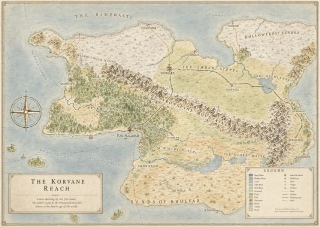
A single letter in the bottom corner of every hex is its terrain code. The letter is the ruling when the artwork straddles a grid line, and it is the key into the travel and discovery tables.
| Code | Terrain | Kind |
|---|---|---|
| G | Grassland | land |
| F | Forest | land |
| H | Hills | land |
| M | Mountain | land |
| B | Marsh | land |
| T | Tundra | land |
| D | Desert | land |
| R | River | fresh water |
| L | Lake | fresh water |
| S | Shallow water | sea |
| O | Deep water | sea |
Waterside is never printed: a land hex with a water hex beside it is waterside, read off the map when a rule asks. Crossing costs and what waterside allows are in The map and travel (Part 8).
What stands on the map:
Figures — prospector, merchant, soldier and hero: the pieces that move rather than work. Your hero is the figure a character card belongs to.
Deposit tokens — 24 mm hexagons laid face down at setup, the deposit's mark on one face and what it holds on the other. A survey turns one over. A deposit is not a commodity; it is a place a mine draws from until it is empty.
Tree tokens — a forest hex carries 6, a hex with scattered trees fewer. Felling takes one off; when the last goes, a forest is grassland.
Route tokens — a road, a rail or a bridge is a bar laid along the line between two hex centres. Rail carries sleepers across its width; a bridge has squared ends and a parapet and lies across one water hex. Peg holes down the centre line say whose it is — one for the first player, two for the second, and so on — as well as the colour. An unmarked road belongs to nobody.
Building tiles, below, with a building marker in your colour on the ones that are yours, and whatever a discovery roll leaves behind — a monster's card, a cave, a quest site — marked on its hex so the whole table can see it.
Cards
Every card is 63 × 88 mm and carries a code: a deck prefix and a two-digit number, CHR-01, MON-09, QST-07, with a v2 suffix if it is ever reprinted changed. The prefix is which deck it goes back into.
The summary strip
Across the top of a card is a row of lettered boxes, the letter first and the figure after it. Each figure is the most that number can ever be. Where the player board has a track with that letter, the strip is where you read the number to set the token; where it has none, the number is printed, used, and never walked.
| Letter | Means | Counted on |
|---|---|---|
| H | Health — a vehicle's hull | the H track |
| S | Strength — what you swing with in a battle | the S track |
| B | Burden — the kilograms a figure can still take on | the B track |
| C | Charisma — added to a roll to befriend a monster | the C track; it does not walk |
| F | Hunger — rises a rung a round | the F track |
| T | Thirst — rises a rung a round | the T track |
| P | Pace, in hexes | the P track |
| M | Mana | the M track |
| W | Wear — how worn a thing is | the wear ladder beside its kit slot |
| K | Capacity — what a container still holds: arrows, draughts, meals | the capacity ladder beside its kit slot |
| A | Armour — a monster's hide, added to its battle total | nowhere; it does not change |
| Y | Mana yield — the most a slain monster gives up | nowhere; a ceiling on the purple die |
| CG | Cargo — the bulk a vehicle's hold takes | nowhere; the cargo itself sits in the kit slots |
| ¤ | Coin — a figure's starting purse, or what a thing is worth | nowhere; coin is counted in coin |
| KG | Kilograms — what a thing weighs | nowhere; it comes off the B track when the thing is picked up |
| BP, R, L, J, G, V | A building's build points, minimum rounds, lodging, jobs, goods stored, victory points | nowhere; a building walks nothing |
| Deck | Strip |
|---|---|
| Characters | H, S, B, C, F, T, P, M, ¤ — a starting value for every track, then coin |
| Monsters | the same nine, then A, Y and the element's mark |
| Vehicles | the same nine, then CG |
| Talismans | M, ¤, KG |
| Items, Weapons, Armour | W, then K where the thing holds something, ¤, KG |
| Tools | W, ¤ |
| Modifications | ¤, KG — an enchantment prints M, the mana to bind it, and its element's mark |
| Spells | M, the mana to cast it, and its element's mark |
| Buildings | BP and R, then L, J, G and V where the building has them |
| Events, Quests, Campaign | No strip: everything the card does is in its text |
A figure's strip is two rows, and every box in it but M is a starting value: set the board's markers left to right along it. M is the most the mana track may ever hold, and the marker itself starts at 0. Some boxes print 0 — Hunger and Thirst start at nothing, and a leg's Pace is not set until the leg starts. A monster or a vehicle prints Charisma 0, and a vehicle prints Strength 0. An element mark is one of four: fire, earth, water, air. Am. 2
The decks and their backs
Each deck has its own back: the deck's name, mirrored so it reads either way up, with a motif in a roundel at the centre. The word is the identification; the ink and the motif are how you tell a face-down stack from across the table.
| Deck | Code | Motif | Ink |
|---|---|---|---|
| Characters | CHR | rivet | ochre |
| Vehicles | VEH | wheel | slate |
| Monsters | MON | eye | oxide |
| Talismans | TAL | rayed | bruise |
| Modifications | MOD | wheel | verdigris |
| Spells | SPL | rayed | bruise |
| Events | EVT | rivet | oxide |
| Quests | QST | compass | ochre |
| Campaign | CAM | rayed | verdigris |
| Items | ITM | rivet | slate |
| Weapons | WPN | blade | oxide |
| Armour | ARM | slate | |
| Tools | TOL | socket | verdigris |
| Buildings | BLD | bond | oxide |
Talismans and spells share a back apart from the word; read the word. The campaign deck is the one deck never shuffled: it is read in order, a card a chapter. Every card in every deck is printed in full in Annex II.
The player board
One A4 sheet per player, every one identical. Print one more than there are players — the spare is the encounter board — and one for every vehicle anyone expects to have on the road at once. On it: Am. 2

IN PLAY, top left: a recess for the card this board is running — a character, a monster or a vehicle.
2 kit slots: whatever that card has in play — a weapon, a suit, a lantern, a tool, a talisman; on a vehicle's board, its cargo and modifications. That is the limit; one more thing in play means putting one down. Am. 2
A wear ladder and a capacity ladder against each kit slot, W and K, for the thing lying in it. Am. 2
Eight tracks up the middle, H, S, B, C, F, T, P and M, about the card in the recess. Am. 2
THE ROUND along the foot — the six phases in order — and beside it IN A FIGHT, the battle sum. Turn order passes to the left.
Every track and ladder runs from 0 to 20, numbered from the bottom, every fifth rung ruled heavier. That is the game's ceiling: nothing a token walks ever runs past it. A 7 mm bar walks each column; a 4.5 mm pip walks each wear ladder. Am. 1
| Track | Set from | Walks | At zero |
|---|---|---|---|
| H Health | the H box | Down as the figure is hurt; up under medical aid only — sleep mends nothing. A hull walks the same column, down as damaged and up as repaired | Carried to the nearest settlement, everything it carried lost. A vehicle is wrecked and spills its cargo on the hex |
| S Strength | the S box | Down a rung for every night without a camp; all of it back after one night's sleep. It is for battle only | No fighting |
| B Burden | the B box: kilograms | Down by the mass of everything picked up, worn or wielded and by the purse; up as things are put down or spent | Full: nothing more can be taken up |
| C Charisma | the C box | It does not walk; it is added to a roll to befriend a monster | Nobody takes your side: nothing is added |
| F Hunger | the F box, 0 | Up a rung every round on the road; down as food is eaten | At the top of the track, 1 health lost every round |
| T Thirst | the T box, 0 | Up a rung every round; down as water is drunk | At the top of the track, 1 health lost every round |
| P Pace | the speed table, at the start of each leg | Down a rung for every hex entered | The leg is over: roll for discovery where you stopped |
| M Mana | 0, the bottom rung | Up as a slain monster yields mana, down as spells are cast. The most it may hold is the M on the character plus the M of every talisman in a slot | Empty |
| W Wear, one per slot | the W box of the card in that slot, when the card goes in | Down a rung every time the thing is used; up as it is mended | Worn out: discard the card and clear the ladder |
| K Capacity, one per slot | the K box of the card in that slot, when the card goes in | Down a rung every time something is taken out of it; up as it is filled again, never above the K box | Empty: it does nothing until it is filled |
Which uses cost wear, and what mends health, strength and gear, are in Effort and jobs (Part 5), The map and travel (Part 8), Monsters and battle (Part 12) and Heroes, vehicles and gear (Part 14).
One number deliberately has no track. Armour: a monster prints its own in the A box; a character's is whatever gear is in the kit slots. Either way it is added to a battle total and never walked. Am. 2
The encounter board
When a discovery roll turns up a monster or a stranger, the spare board runs it:
Deal the card face up into the IN PLAY recess.
Set H, S, P and M from its strip, exactly as a player sets their own. A does not move; Y is not set anywhere.
The player to the left of whoever drew it runs it, as a player who is not a person.
When the encounter ends, put the card away as the outcome says and take the tokens off. Nothing is written down.
How an encounter plays out is in Discovery and encounters (Part 11) and Monsters and battle (Part 12).
A vehicle's board
A vehicle in play is dealt a board of its own and run the same way: its card in the recess, its hull on the H track, its cargo and modifications in the 2 kit slots. CG on the card is how much bulk the hold takes, and there is no token for it — the cargo is what is in the slots. At zero hull the vehicle is wrecked. See Heroes, vehicles and gear (Part 14). Am. 2
Dice
Effort dice. Every worker rolls one die a round and the pips are hours. Most workers roll a d6; the ladder a die can step up or down is d4, d6, d8, d10, d12. See Effort and jobs (Part 5).
The five coloured dice, six-sided, one set for the whole table:
| Die | Colour | How many | What it does |
|---|---|---|---|
| Demand | blue | 2 | Added: how badly the town wants the good. In a fight, your own dice |
| Supply | red | 2 | Subtracted: how much turned up, and the most the board will sell this round. In a fight, the other side's dice |
| Volatility | green | 1 | Read on the market board's strip: −2, 0 or +2 |
| Spoil | ochre | 1 | Rolled at the end of every round against each perishable stack you hold; the spoil strip says how many you discard |
| Mana | purple | 1 | Rolled once when a monster dies; you take the lesser of its Y and the roll |
Blue is what you want and red is what stands in your way, everywhere: a market is demand less supply and a battle is your total less theirs, with the same two colours. One player rolls the market for the whole ledger; every player rolls the spoil die for their own goods. Besides these, a d20 is rolled when a leg ends (Discovery and encounters (Part 11)) and a d6 for a survey (The map and travel (Part 8)).
The market board and the depletion sheet
The market board is one A4 sheet for the whole table. Nothing stands on it and it records no price: it says how a price moves. Across its head is THE ROLL — a key to the dice, the three-cell volatility strip, and the seven-cell swing ruler that turns the net of a roll into how many places a price steps. Under it are FOUR KINDS OF GOODS, a panel per kind with its mark and a worked example, and along the foot THE MARKET, the trading rules. Every commodity is exactly one of the four, and the mark is engraved in the corner of its token:
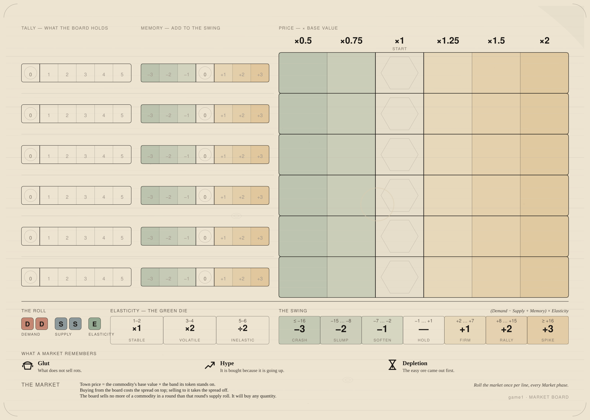
| Mark | Kind | On the swing |
|---|---|---|
| Staple | Adds nothing; the dice are the whole story | |
| Perishable | Adds nothing, but every stack still held at the end of a round faces the spoil die | |
| Finite | Adds the lowest number still visible on its depletion grid | |
| Sought | Adds the move it made last round, read off the ledger |
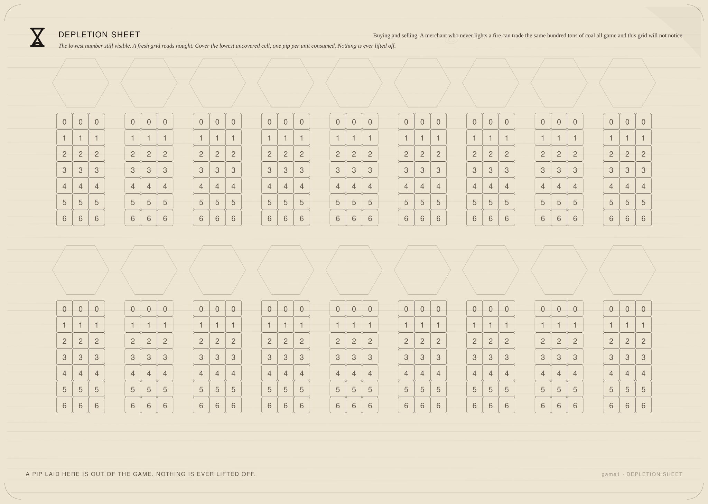
The depletion sheet is a page of identical grids, one per finite commodity in play. A grid is 3 cells wide and runs from a row of noughts down to a row of 6, under a hexagonal seat the commodity's own token stands in all game. Every time a unit of it is burnt — never when it is traded — a pip goes on the lowest uncovered cell, and it is never lifted off. The lowest number you can still see is what that commodity adds; a fresh grid reads 0. Print a fresh sheet every game. The procedure is in Trade and the market (Part 9).
The price ledger
The ledger is the only place a price lives: one A4 portrait sheet per town whose market you are trading in, printed fresh each game. Six columns run across it, each headed by a hexagonal seat — a column is not the grain column until the grain token stands in it — and a row runs down it for every round, 1 to 24. Each cell is three hollow seven-segment figures and a small move box.
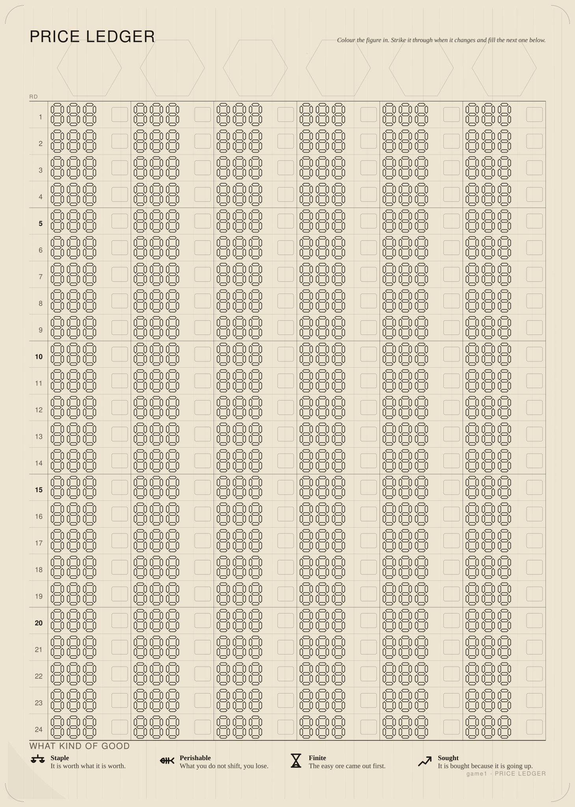
Fill the figure's segments in pencil. Leave leading zeros blank: a price of 8 is a blank, a blank and an 8.
When the price changes, rule a line through the figure in the row above and fill the new one in this round's row.
Write the move in the box: how many places the price stepped, -3 to +3, or a dash if it held. A dash says the roll happened; an empty box says somebody forgot the column.
The one un-struck figure in a column is the price now. The four kind-of-good marks are printed along the foot as a key. A town trading more than six commodities takes a second sheet.
Mini-maps
Some moments need more board than one hex — a battle, a settlement growing into a town. A mini-map is one hex of the world opened out: an A4 sheet per terrain, a hexagon of cells 5 to a side, sixty-one in all, in that terrain's colour and mark. Each cell is exactly a world-map hex, so a figure, a route bar or a building tile moves between the two as it is. The ENCOUNTER panel on the left has rows for Order, Round and Morale, out for a fight and put away after; the HOLDINGS panel on the right has Built, Garrison and Stores, in front of you as long as the settlement stands. The footer prints the sheet code and the terrain code, with a pencil blank for the map hex it stands in for. Play happens inside the sheet and the result is written back to the big map.
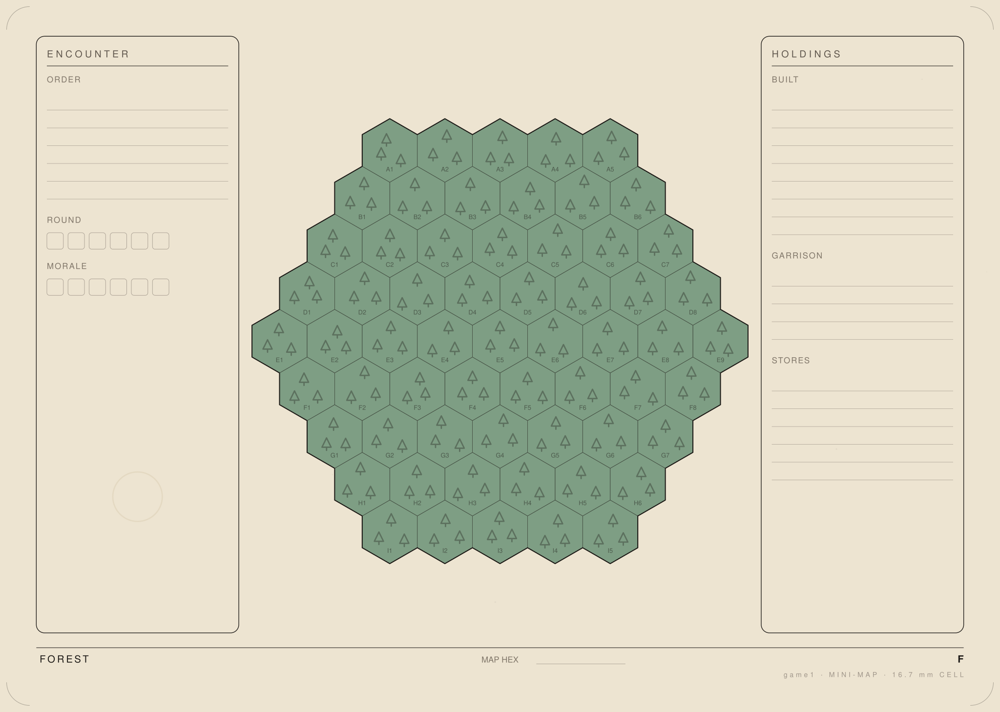
Building tiles
A building tile is what you put down when you build. Its face is the finished building in colour, its name in a solid band along the lower-left edge. Its back is the same picture without the colour and the same name in a hollow band: the site pegged out, or a field sown. Lay a tile back up the round work starts and turn it over when the effort is paid — for a field, when the crop has stood its maturation rounds. A tile carries no number; the building's numbers are on its card, which you keep as well as the tile.
A tile is one to four cells, and a cell is a world-map hex, so it sits on the map or a mini-map without trimming. There is one shape per size, and the upper-left cell of each is the one you are told to place:
| Cells | Shape | Stands for |
|---|---|---|
| 1 | single hex | A building with nothing outside it: a hut, a shop, a well, a tower |
| 2 | pair, two along a row | A building and its yard: a farm steading, a smithy with its stack |
| 3 | triad, three touching | A works: a granary, a tannery's pits and racks, a quarry, a harbour |
| 4 | rhombus, two rows of two | An estate: a manor and its grounds, a pasture and its fence, a steelworks |
A field is its own one-cell tile laid beside the farm, touching the farm or another of its fields, up to the farm's field slots. Road, rail and bridge are not tiles; they are the route bars above. Which building takes which tile is in Annex I, Buildings; every tile is pictured in Annex II.
Tokens and coin
Commodity tokens — 18 mm flat-topped hexagons carrying the family's mark and hatch, and the kind-of-good mark small in the corner. Never a number. One stands in a ledger seat to name a column, and one in a depletion seat to name a grid.
Coin — round, in three sizes for 1, 5 and 25, stamped with the figure and the mark ¤. Coin has weight, 40 to the kilogram, on the same scales as everything else a figure carries.
Bars — the discs that walk the four column tracks, four per player board.
Pips — one walks each wear ladder and comes off when the thing is finished with; one covers each depletion cell and never comes off. A pip means one use of one thing has been spent, an axe or a coal seam alike. There is no reserve: running out of pips is running out of seam.
Workers, specialists and soldiers — meeples, a specialist a different shape from a worker. Workers and specialists live in a town and roll effort there; a soldier fights, escorts and garrisons, and moves as a figure does.
The round marker, turn-order markers and the first-player token.
Setting up
PurposeFree play is set up in three passes. The table lays out a board and the shared sheets; each player chooses a people, takes a character, founds a town and sets a hero on a player board; then every deck is shuffled. Nothing is written on a ledger until the first Market phase. A campaign begins with the same setup and then follows its own chapter, Quests and campaigns (Part 15).
The table
Choose a board and lay it out. Any board will do in free play. The first is The Korvane Reach: a north-facing continent with an ice waste along the top, a wooded west, a dry south and a mountain spine, carrying nineteen printed settlements — one seat, two cities, eleven towns and five villages, four of them harbours. Printed settlements belong to nobody. They are where you rest, hire, shop and sell; what each rank offers is in The map and travel (Part 8) and Trade and the market (Part 9).
Read the ground off the letters. On a drawn map every hex's terrain is printed, and the letter in its corner is the ruling. Nothing on a drawn map is face down except the deposit tokens, below. A table playing on loose hex tiles instead deals every tile beyond the starting clusters face down; a prospector flips them, as chapter 08 describes.
Lay the market board where everyone can read it, with a fresh depletion sheet beside it. Nothing ever stands on the market board. The depletion sheet takes pips that are never lifted off, so it is printed new for every game.
Lay a price ledger for each town you expect to trade in. A ledger names no commodity: a column belongs to a good only once its token stands in the seat at the head of that column. Leave every seat empty for now. Ledgers are written on, so use fresh sheets and keep a spare.
Put the dice in the middle. The market dice are two blue, two red, one green, one ochre and one purple. The effort dice are a d6 for every worker at the table and a d8 for every orc worker, with a shared d4, d8, d10 and d12 for anything that steps a die up or down. Keep a d6 for surveys and a d20 for discovery.
Sort the tokens: commodity tokens by kind, coin by size, bars and pips, route tokens by player colour, and the building tiles by building.
Each player
Take these steps in order. Each one reads off the step before it.
Choose a people
Your people decides how many workers you start with and what die each of them rolls, and its traits apply to every worker and figure of yours for the whole game. The full trait list is in Annex I, Peoples, traits and professions; the two numbers you need now are here.
| People | Starting workers | Effort die |
|---|---|---|
| Humans | 2 | d6 |
| Dwarves | 2 | d6 |
| Elves | 2 | d6 |
| Halflings | 3 | d6 |
| Orcs | 2 | d8 |
Take that many worker pieces in your colour, your route tokens, and four bars and four pips for your board.
Take a character
Deal one card from the character deck, or pick one; the table decides which way before anyone looks. Every card in the deck is playable in free play, including the cast a campaign brought with it. The card gives your hero a name, a face, a calling, their traits and a summary strip across the top: H health, S strength, B the kilograms your hero can take on, C charisma, F hunger, T thirst, P pace, M mana held in the body and ¤ coin. Set a marker on each track to the figure in its box, left to right. Am. 2
Some characters are dealt an item with the card — Corin Vale's travelling cloak, Ruk's war axe, Old Mother Keswick's bone charm. Find it in the items, weapons or talismans deck and take it now. Then shuffle the rest of the character deck and set it aside face down: strangers met on the road are dealt from it.
Take your coin
Take coin equal to the ¤ box on your card. Corin Vale starts with 45, Tilly Goodbarrel with 80, Old Mother Keswick with 35. That box stands in for the 60 coin a town begins with when no hero is in play. Coin is one pool: it lies in your town until your hero carries it out, and from then on it weighs like everything else on their back — see Heroes, vehicles and gear (Part 14).
Set your player board
Take a player board. Every board is identical; who is sitting behind it is printed on the card in the recess. Am. 2
Lay the character card in the IN PLAY recess.
H — put a bar on the health track at the figure in the H box.
S — put a bar on the strength track at the figure in the S box.
B — put a bar on the burden track at the kilograms in the B box. It walks down as you pick things up. Am. 2
C — put a bar on the charisma track at the figure in the C box. It stays there. Ins. 2
F and T — put a bar on each of the hunger and thirst tracks at the figure in its box, which is 0 on every card. Each rises a rung every round on the road. Ins. 2
P — put a bar on the pace track at the figure in the P box, 0. Pace is set when a leg begins and walked down as hexes are entered. Ins. 2
M — put a bar on the mana track at 0. Nobody starts holding mana; it is won from slain monsters and from some quests. The M box on your card, plus the M box of every talisman in a kit slot, is the most the track may ever climb to.
Lay any card dealt with your character in a kit slot. If it has a W box, put a pip on the wear ladder beside that slot at the W figure — the travelling cloak's is 5, the war axe's 6. A potion has no W box and takes no pip; a talisman never wears.
Print one board more than there are players and leave it empty. That is the encounter board: a monster or a stranger turned up by a discovery roll is dealt onto it and run like a player, as Discovery and encounters (Part 11) describes. A vehicle in play is dealt a board of its own too; nobody starts with one.
Found your town
Choose a start hex. It must be marked G or F, and at least three hexes from any other player's starting cluster. Your starting cluster is that hex and two hexes touching it.
Stand your town hall on the start hex, face up — the finished picture, with the solid name band — and a hut with it. Both are already built; no materials and no build points are owed for them.
Put your workers in the town.
Put the starting stock in the stockpile: 2 logs, 8 grain, 1 water and 1 barrel. The grain is there to feed two or three workers until a first harvest comes in, and it is meant to be spent. It all sits well under the 10 slots every town has plus the town hall's 6.
Take an axe and a shovel from the tools deck. A tool is a card with a W box like anything else. Lay each in a kit slot on your board and put a pip on the ladder beside it: 10 for the axe, 9 for the shovel.
Stand your hero figure on the town hall's hex. It is the only figure you start with. Prospectors, merchants and soldiers are bought during play — see The map and travel (Part 8).
The deposits
A deposit is a source under a hex, never a commodity. Its tokens go down face down at setup and stay hidden until a prospector surveys the hex — the survey is in The map and travel (Part 8). The tokens of one kind are not all the same: two coal seams are two different prospects, and a survey tells you which one you found. There are 11 kinds.
| Deposit | Tokens |
|---|---|
| Clay Bed | 8 |
| Sand Bar | 6 |
| Peat Bog | 5 |
| Coal Seam | 7 |
| Iron Deposit | 7 |
| Copper Deposit | 4 |
| Gold Deposit | 3 |
| Gem Vein | 3 |
| Salt Dome | 4 |
| Mana Vein | 2 |
| Oil Field | 3 |
Each kind hides only under certain ground; which terrains hold which deposit is in Annex I, Terrain. A deposit you reveal is not yours: it belongs to whoever builds on it first.
Open. On a drawn map three things are not yet settled: how far a starting town must stand from a printed settlement; which hexes take deposit tokens, and how many; and how a token stays hidden on a hex with no tile to slide it under. Until they are, agree a method at the table before anyone looks — tokens face down, on land hexes whose terrain can hold that kind, and well mixed, so that nobody knows which figure lies where.
The decks
Shuffle each of these and stack it face down: events, quests, monsters, items, weapons, armour, talismans, spells, vehicles, modifications and tools — and the characters left over after everyone has chosen. The event deck is 96 cards. Nobody is dealt one; the first is turned in the Events phase of round 1, and nobody starts with a quest or a vehicle either.
Lay the buildings deck face up where everyone can reach it. It is a reference, one card for every building, and is never shuffled or dealt.
Leave the campaign deck in the box. It is read in order, and only in campaign mode.
Prices at the start
Every good begins at its base value. A commodity's six prices are printed as one row of six figures in Annex I, The market and every price, at ×0.5, 0.75, 1, 1.25, 1.5, 2 of its base value; the base value is the third figure of the row. Nothing is filled in on any ledger at setup. Until the first Market phase every good trades at its base value, and the first roll steps from that figure into row 1.
Sought goods start on nothing. There is no move box above row 1, so the first round is played on the dice alone. The mark in a token's corner says which kind of good it is — staple, perishable, finite, sought — and each kind's rule is in Trade and the market (Part 9).
The board has stock in round 1. The first time a commodity's token is stood in a ledger seat before the first Market phase, roll two red dice: that is how many units of it the board will sell until the market has been rolled.
A fresh depletion grid reads 0. Stand a finite good's token in the seat of an empty grid the first time a unit of it is burnt.
Turn order and the first round
Turn order runs clockwise, and the first seat passes one player to the left at the end of every round, so over 24 rounds everyone leads about equally. Put the round marker on 1 and begin with the Events phase — The round (Part 4).
Open. How the first player is chosen is not decided. Until it is, choose one any way the table agrees and give them the first-player token.
Setup at a glance
| Ready when | |
|---|---|
| Board | one, chosen by the table, printed settlements belonging to nobody |
| Shared sheets | market board, a fresh depletion sheet, a fresh ledger for every town to be traded in, seats empty |
| Dice | two blue, two red, one green, one ochre, one purple; a d6 per worker; the d4–d12 set; a d6 and a d20 |
| Each player | a people; a character and what came with it; the ¤ box in coin; a board with H and S set, P and M at 0; a town hall and a hut on a G or F hex; workers; 2 logs, 8 grain, 1 water, 1 barrel; an axe and a shovel; one hero figure |
| Spare | one empty player board for encounters |
| Deposits | every token face down and hidden |
| Decks | every deck shuffled, except the buildings deck (reference, face up) and the campaign deck (in the box) |
| Prices | base value everywhere, nothing written |
| Round | marker on 1, a first player chosen, Events phase first |
The round
PurposeA game is 24 rounds, and every round is the same six phases in the same order: the event cards come out, the workers roll for hours, the players spend them, the world moves on a step, everybody eats, and the market fixes next round's prices. This chapter is the order of play. Each phase points to the chapter that holds its full rules.
The six phases
| Phase | What happens | Who, and in what order |
|---|---|---|
| 1. Events | Each player reveals an event card and resolves it | Every player, in turn order |
| 2. Labour Roll | Every worker's die is rolled; the pips are this round's hours | Every player, together, in the open |
| 3. Actions | Hours, coin and commodities are spent: allocate, build, move, trade, forage, fight | One turn each, in turn order |
| 4. Production Tick | Every progress track advances one step | Everything on the table, all at once |
| 5. Feeding | Every town pays food; then the spoil die is rolled | Every town, then every player |
| 6. Market | The market is rolled for every column on the ledger | One player rolls for the whole table |
The same list is printed on every player board under THE ROUND, so nobody has to hold it in their head.
Turn order
Turn order runs to the left, clockwise, from the first player. Anything done "in turn order" — revealing event cards, taking turns in the Actions phase, passing an offer round the table, buying from the board — starts with the first player and goes left from there.
At the end of every round, once the Market phase is done, turn order passes to the left: the player on the first player's left is first player for the next round. The player who traded last this round trades first in the next.
Open. Nothing yet says who is first player in round 1. Until it does, settle it however the table likes at setup; from then on the first player moves one seat to the left every round.
1. Events
Starting with the first player, each player in turn order turns over the top card of the event deck, reads it out and resolves it before the next player draws. Each player reveals 1 card.
The card's scope says who it hits, whoever drew it. A global card hits every player. A local card hits one region of the board: roll for the region. A targeted card hits the player who drew it — except a crime card, which hits the leader. An offer is decided by the drawer first; if they pass, it goes round the table in turn order.
From round 13, the first player reveals and resolves a second card as well.
When the deck runs out, shuffle the discard pile and carry on.
Events come before anything else in the round so that you plan around them, rather than being punished for a plan you have already committed to. What each card does, what a region is, who the leader is and what would have softened the blow are in Events (Part 10).
2. Labour Roll
Every worker rolls 1 die. The pips are hours of effort, the currency you spend in the next phase.
The ordinary worker's die is a d6. Some peoples, some jobs and some cards step it along the ladder d4, d6, d8, d10, d12.
Specialists roll like any other worker. Soldiers roll nothing: they eat and they fight, but they do not work. A character or hero figure is not a worker and rolls no effort die.
Roll in the open. Everyone sees how good everyone else's round is going to be, which matters when you sit down to trade.
Hours belong to the town whose workers rolled them. Effort is not a commodity: it cannot be stored, traded, stolen or carried to another town.
What steps a die up or down the ladder, what adds flat hours, what grants an extra die, and the order they stack in are in Effort and jobs (Part 5).
Unspent hours are gone at the end of the round. There is no banking a quiet round to fund a loud one.
3. Actions
In turn order, each player takes one turn: they spend their hours, their coin and their commodities, doing as much as they can afford in whatever order they like, and then play passes to the left. A round holds one turn per player. A turn can hold any mix of these:
Allocate hours to jobs — a recipe run at a site, with the tool, the inputs and the worker it needs. Effort and jobs (Part 5)
Build — found a site, paying its materials in full, and put hours into it as build points. Effort and jobs (Part 5)
Move a figure, a party, a vehicle or a cargo: one day leg, and a night leg after it if you carry a lit torch or lantern. A discovery roll is made where every leg ends. The map and travel (Part 8), Discovery and encounters (Part 11)
Trade — with the board, at the price the ledger shows, or with another player at whatever the two of you agree. Trade and the market (Part 9)
Forage, hunt, survey and prospect — jobs done on the ground rather than in a building. Effort and jobs (Part 5), Discovery and encounters (Part 11)
Fight, or refuse to — the monster the road turned up, a town somebody else owns, or in defence of your own. Monsters and battle (Part 12)
Three things to hold onto while you take a turn:
The price you trade at is the one already written on the ledger. The board sells at most as many of a commodity as its red supply dice rolled last Market phase, first come first served in turn order, and it buys any quantity. Trade and the market (Part 9)
Every unit of a finite commodity you burn — in a furnace, in an engine, in a recipe — puts a pip on its depletion grid then and there, in your turn. Trading it puts none.
When a leg ends, the discovery roll is made at once, and whatever it turns up is dealt with in the middle of your turn, not saved for later.
4. Production Tick
Nothing is chosen in this phase. Every progress track on the table advances one step, all at the same time:
Construction. Every building site counts another round towards its minimum. A site whose build points are all in and whose minimum rounds have passed is a finished building. Effort and jobs (Part 5)
Crops. Every growing crop advances one step on its growth track. A crop at the end of its track is ripe; harvesting it is a job, next round. Commodities, recipes and buildings (Part 6)
Maturing goods. Wine in the barrel, livestock breeding in the pasture — anything a recipe says takes rounds — comes one round closer, and what has waited its full time is ready. Commodities, recipes and buildings (Part 6)
Transport. Cargo in transit advances along its route at its mode's speed. The map and travel (Part 8)
5. Feeding
Every town pays 1 food per worker — specialists and soldiers included — from food held in that town, and nowhere else — see People, food and unrest (Part 7). You choose which food commodities to pay with.
Every worker who cannot be fed gives the town 1 unrest. At 3 unrest the town riots.
A town fed from 3 or more different food commodities in the same Feeding phase earns the variety bonus: one extra hour for every worker there next round.
Figures on the road eat too. Every figure that is not in a town being fed by it moves its Hunger and Thirst markers up 1 rung, then may eat and drink to bring them down; a figure at the top of either loses -1 health. Sleep is the other half of a traveller's upkeep: a party that made camp has its strength back, and a party that did not has lost some. The map and travel (Part 8) Am. 2
At the end of the phase, two more things happen:
Storage overflows. Anything a town holds above its storage capacity is lost: half of it, rounded up. Effort and jobs (Part 5)
Every player rolls the ochre spoil die once for every perishable stack they hold — in a town, in a hold or on a figure's back — and discards what the spoil strip says. Grown, bought, looted or found makes no difference to a fish. The board's own stock never spoils; the board is not holding it, it is selling it. Trade and the market (Part 9)
Feeding is the deadline every other decision is measured against: you can spend the whole round on a steelworks, but the workers still want feeding at the end of it.
6. Market
Nobody trades in this phase. It fixes the price everybody will trade at next round, so that you act on a price you can see and find out afterwards what your acting did to it.
One player rolls for the whole table. The market's dice are shared, not one set per player.
For each column on each ledger in play, roll 2 blue dice for demand, 2 red for supply and 1 green for volatility. Read the green die on the volatility strip printed on the market board: it adds −2, 0 or +2.
Add the commodity's own modifier. A finite good adds the lowest number still showing on its depletion grid. A sought good adds the move written in the box on the row above. A staple or a perishable adds nothing.
The net is Demand − Supply + Volatility + Modifier, and the whole sum is addition: nothing multiplies, nothing is halved, nothing rounds. Find the net on the swing ruler on the market board; it says how many places to step. Step the price that many places along the commodity's printed row of six prices. A price at either end of its row that is told to go further stays where it is.
Fill the new price into the ledger's row for this round, strike the old one through, and write the move in the row's move box: a signed figure, or a dash if the price held.
Remember the red total for each column: it is also how many of that commodity the board will sell before the next Market phase.
Turn order passes to the left.
The swing ruler, the four kinds of good, the spread, and every commodity's row of six prices are in Trade and the market (Part 9) and Annex I, The market and every price. In round 1, before any market has been rolled, prices stand where setup put them — see Setting up (Part 3).
The end of the round
When the Market phase is done, before the next round's cards come out:
Unspent hours are gone.
Mana gained this round with nowhere to hold it blows away. Mana, talismans, spells and potions (Part 13)
The new first player opens the next round's Events phase.
The ledger's rows are numbered by round down its left-hand edge, so the next empty row is the round you are about to play.
The end of the game
The game ends when round 24's Market phase is done. Stop there and score — how is in The game (Part 1).
Effort and jobs
PurposeEvery worker rolls a die at the start of the round, and the pips are hours. You spend those hours on jobs: a recipe run at a site, usually with a tool, usually on something out of the stockpile. Hours you have not spent when the round ends are gone.
The labour roll
The labour roll is the second phase of the round (see The round (Part 4)). It is made in the open, so everyone can see how much work everyone else has this round.
Roll 1 die for every worker in every town you own. Most peoples roll a d6; orcs roll a d8. A people's traits can change the die a worker rolls at a particular kind of site — see People, food and unrest (Part 7).
Leave each die beside its worker. The pips on it are that worker's hours for the round.
A specialist rolls the same die as any other worker. A soldier rolls none, and neither does a character: heroes are figures, not workers.
Modifiers
Anything that changes a worker's roll does one of three things. Apply them in this order:
Extra dice. Roll the extra die as well as the worker's own.
Die steps. Move the worker's die up or down the ladder: d4, d6, d8, d10, d12.
Flat hours. Add or take hours from the pips. However many bonuses stack, a worker never gains more than 3 flat hours in a round.
The modifiers a table meets most rounds:
| Modifier | What it does | Where the rule is |
|---|---|---|
| Variety bonus | A town fed from 3 or more different foods gives every worker in it 1 extra hour next round | People, food and unrest (Part 7) |
| Riot | Workers in a rioting town roll a d4 until the unrest clears | People, food and unrest (Part 7) |
| Tundra | -1 hour for every worker at a site on a tundra hex | The map and travel (Part 8) |
| Shrine | Once a round, re-roll one effort die in the shrine's town | Commodities, recipes and buildings (Part 6) |
| Event cards | A card may add or take hours, step dice, or cut a town's effort for a round; it says which, and for how long | Events (Part 10) |
| People's traits | A dwarf at a mine rolls a d8, an elf at one a d4, and so on | People, food and unrest (Part 7) |
Hours do not keep
Whatever you have not spent by the end of your turn is lost. There is no saving a quiet round to fund a loud one.
Allocating workers
You spend hours by putting workers at sites. A site is wherever a job happens:
a finished building;
a construction site — a building founded and not yet finished;
bare ground — a hex whose terrain the recipe names, with nothing built on it: felling timber in a forest, cutting peat on a marsh, angling from any bank;
a deposit, through the mine built on top of it;
a figure on the map — a prospector surveys where it stands.
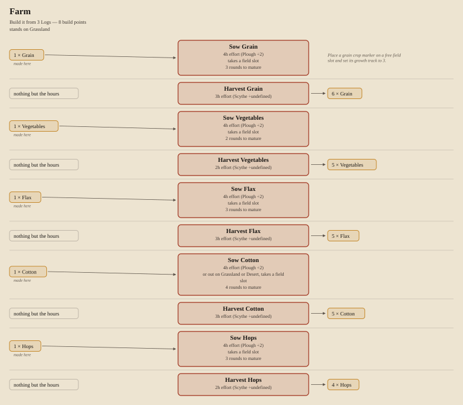
To allocate a worker, put its die on the site. Then:
A worker works at one site a round. Its hours are spent there and nowhere else.
Hours at a site pool. Two workers at a farm who rolled 3 and 2 have 5 hours between them, which is one sowing.
A site takes only so many workers. Every building prints its worker slots; a construction site takes 3. The cap is why you build a second of anything.
Hours left over at a site stay there. If they cannot start another batch at that site, they are lost.
Open. No worker cap is given for a job on bare ground or on a figure. Until there is one, allow a bare hex the same 3 workers as a construction site.
Running a job
A job is a recipe you can legally run right now. It is legal when all of these hold:
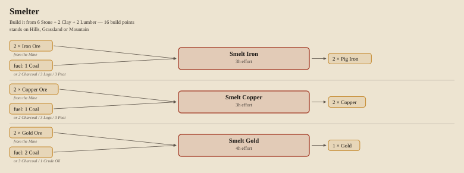
Site. You have the place the recipe names, and your workers are at it.
Tool. You hold a tool of the kind the recipe names, with wear left on it, if it names one.
Specialist. A fed specialist of the profession is present in the town, if the recipe asks for one.
Inputs. The commodities are in that town's stockpile.
Fuel. You can pay one of the options in the recipe's fuel bundle, if it burns something.
Hours. The workers at the site have the batch's hours left between them.
Batches
One batch is one run of the recipe: its full hours, its full inputs, its full outputs. You cannot run half a batch, and you cannot take half the output for half the hours. Run as many batches as you can pay for.
When you run a batch everything happens at once:
Take the inputs, and the fuel, out of the stockpile.
Spend the hours.
If this is the first batch of this job this round, knock the tool's wear down one rung.
Put the outputs into the stockpile.
Some recipes do not pay out at once. A sown crop, a breeding pair, a barrel of wine: the recipe says how many rounds it waits. Put the marker down, advance it at each Production Tick, and collect when it is ripe.
Where a recipe accepts more than one input — spinning wool, flax or cotton; butchering any of four animals — it is one job with a choice. Pick the variant when you run the batch. Every job, with its hours, inputs and outputs, is set out building by building in Annex I, The flows of work; the chains behind them are in Commodities, recipes and buildings (Part 6).
Tools
A tool is owned one at a time, not counted in a stockpile. In play it lies in a kit slot on the player board, and the W ladder beside that slot counts its wear (see On the table (Part 2)).
A required tool gates the job. No pick, no coal. A job needs one tool of the kind, whoever's hours go into it.
An optional tool improves the job. Sowing and harvesting are done by hand. A plough halves the hours of a sowing; a scythe doubles the yield of a harvest. An optional tool used in a job wears like any other.
Wear
When a tool comes into play, set the pip on its W ladder to the W box on its card.
Every job the tool is used in knocks it down 1 rung. A job is one recipe at one site for the round, however many hours go into it and however many batches come out: a worker who spends nine hours felling timber has run one job and blunted one axe by one.
At 0 the tool is finished. The job that took it there completes; the hours spent are not refunded, and the tool is discarded.
Everything a figure carries wears the same way — a sword a point a round of battle, a torch a point a night leg. The table is in Annex I, Wear; the rules for gear are in Heroes, vehicles and gear (Part 14).
Sizes
A tool comes in up to three sizes. A bigger tool makes the same hours count for more; it does not let one worker work faster, wear slower, or stand at a site past its worker cap.
| Size | Output | Price | Forged from |
|---|---|---|---|
| Small | ×1 | ×1 | the tool's listed inputs |
| Medium | ×1.5 | ×2 | double the inputs |
| Large | ×2 | ×3.5 | triple the inputs |
Multiplied output rounds down, and is never less than 1.
Repair
Any settlement with a blacksmith can mend a tool. Repair Tool is a job: 2 hours at the blacksmith, with a hammer. It puts up to 3 rungs back on one thing's W ladder, at 4 coin a rung, never above the W box on its card. A tool may be mended any number of times. A tool at 0 is not damaged, it is gone, and cannot be mended.
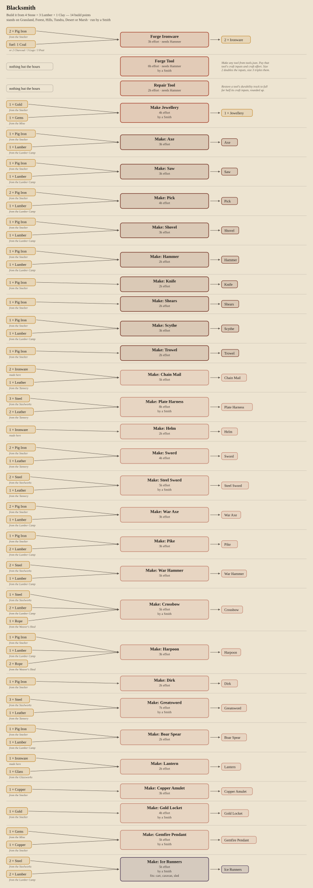
Getting a tool
Forge Tool is a job at a blacksmith with a smith present: pay the tool's own inputs and hours, listed in Annex I, Tools. Or buy one where tools are sold — see Trade and the market (Part 9).
Fuel
A recipe that burns something names a fuel bundle rather than a fuel. Pay any one option from the bundle for each batch. Some options cost a unit of output; one adds a unit.
| Bundle | Option | Pay | Output |
|---|---|---|---|
| Standard | Coal | 1 | — |
| Standard | Charcoal | 2 | — |
| Standard | Logs | 3 | -1 |
| Standard | Peat | 3 | -1 |
| Hot | Coal | 2 | — |
| Hot | Charcoal | 3 | -1 |
| Hot | Crude Oil | 1 | +1, steelworks only |
Fuel is an input like any other: it comes out of the stockpile, and the finite kinds mark their depletion grid when burnt (see Trade and the market (Part 9)).
Building
A building is raised in three steps: found it, work it, finish it.
Founding
Check the building's requirements — the ground, the deposit or water, the building it must follow — on its card and in Commodities, recipes and buildings (Part 6).
Pay the whole material cost from the town's stockpile, now. Nothing is paid at the end.
Put the building's tile on the hex face down. It is a construction site: a place of work with an empty progress track.
A half-built site never decays; the points on it keep.
Working it
Construction labour is a job like any other, run at the site with the workers you put there. Every construction job is one hour a batch, so put in as many hours as you have. Each hour adds 1 build point to the track — or 2 with the right tool for the material.
| Job | Tool | Where it works | Points an hour |
|---|---|---|---|
| Building Work | hammer | any site | 1 |
| Timber Framing | saw | a building whose cost is mostly logs or lumber | 2 |
| Masonry | trowel | a building whose cost is mostly stone or brick | 2 |
| Sink Mineshaft | shovel | a mine | 2 |
| Lay Roadbed | shovel | a road | 2 |
| Lay Rail | hammer | a rail line | 2 |
Roads, rail and bridges are built onto a hex rather than into a town, and the ground multiplies what they cost; that, and the tolls they earn, is in The map and travel (Part 8).
Finishing
A building is finished at the Production Tick when both of these are true:
its progress track holds all of its build points;
its minimum rounds have passed, counting the round it was founded as the first.
Turn the tile face up. From then on it is a site, it houses whoever it houses, and its storage counts. A hut is 4 points and 1 round, so a good roll finishes it the round it is founded. A manor is 30 points and at least 4 rounds, and no number of workers buys its way past the calendar. Every building's cost, points and rounds are in Annex I, Buildings.
Storage and overflow
Every commodity has a bulk, and bulk is what it costs to store: one slot holds one point of bulk. Logs are bulk 2, lumber is bulk 1, gems are bulk 0.5. Bulk is why raw goods are worth processing before they are stored or moved. Tools and items have no bulk: they are owned, not stored, and take no slot.
A town's stockpile is one pool of slots. It starts with 10 free slots and 6 more from its town hall, and buildings add to it:
| Building | Slots | Holds |
|---|---|---|
| Warehouse | 12 | anything |
| Granary | 10 | food and drink only; a perishable stack in it reads one row up the spoil strip |
| Lumber camp | 4 | logs, on site |
Overflow. At the end of the Feeding phase, whatever is above the town's capacity spoils: lose half of it, rounded up. A perishable stack outside a granary also rolls the spoil die in that same phase — see Trade and the market (Part 9).
Commodities, recipes and buildings
PurposeEverything you make, move or sell is a commodity; every way of spending effort is a recipe; and a recipe runs at a site, which is usually a building. This chapter says what those three things are and what each one asks of you. How many hours a job costs you, and what a tool does to it, is in Effort and jobs (Part 5); what a good fetches is in Trade and the market (Part 9).
Commodities
A commodity is a good you can hold in a stockpile, load on a cart, sell at a market or lose to a thief. There are 66 of them, in 11 families. Effort is not a commodity: it cannot be kept, carried or sold. Neither is a tool or an item, which you own one at a time and which wear out. Every commodity is listed with its numbers in Annex I, Commodities.
| Family | What it is |
|---|---|
| Raw | Pulled straight out of the land: logs, stone, clay, ore, salt, water |
| Fuel | Burned to drive furnaces and kilns: coal, peat, charcoal, crude oil |
| Material | Processed stock other things are made from: lumber, brick, metal, glass, rope, leather |
| Textile | Fibre, yarn and cloth, and raw hide |
| Food | Counts towards the Feeding phase |
| Drink | Counts as food, and most drinks lift a worker's effort as well |
| Livestock | Living animals. They breed, they eat, and they yield |
| Container | Barrels, crates and sacks. A liquid needs a barrel |
| Luxury | Low bulk, high value, and scores at the end of the game |
| Arcane | Herbs, roots, lichen and mana crystal: what potions and enchantments are made of |
| Manufactured | Finished goods of several materials: ironware and parchment |
An event card that shoves a family shoves every commodity in it.
Bulk
Every commodity has a bulk: the storage slots one unit takes in a stockpile, and the capacity it takes in a hold. Most goods are bulk 1. The exceptions are worth learning, because they decide what is worth carrying:
Bulk 2: logs, stone, clay, sand, every ore, coal, peat, crude oil, brick, a barrel of ale, mead or wine, and a sheep or a pig.
Bulk 3: cattle and horses.
Bulk 0.5: sacks, spices, gems, jewellery and all five arcane goods.
Bulk is not mass. Bulk is what a commodity costs to store and ship; mass, in kilograms, is what an item costs a figure to carry. The two never convert into each other: see Heroes, vehicles and gear (Part 14).
Value
Every commodity has a base value in coin (¤), and the price a town pays is that value stepped along its price row: see Trade and the market (Part 9). Value divided by bulk is what a storage slot or a cart is really carrying. Logs are worth 4 at bulk 2; jewellery is worth 110 at bulk 0.5. Nobody ships raw logs across the map.
Containers and animals
A liquid cannot be held without a barrel: water, milk, oil, ale, mead and wine all take one as an input, and the barrel comes back empty when the liquid is used. Crates and sacks are reusable in the same way and are what cargo travels in: see Moving goods in Trade and the market (Part 9). Livestock lives in a pasture, breeds there, and can be sheared, milked or butchered; buy your first animal at a market.
The four kinds of good
Every commodity is one of four kinds, and the mark in the corner of its token says which. A staple adds nothing to the market roll: its price is the dice and nothing else, and more than half the goods in the game are staples. A perishable adds nothing either, but every stack of it you are still holding at the end of a round faces the spoil die. A finite good gets dearer every time a unit of it is burnt, and never cheaper again. A sought good adds whatever move its price made last round, and so chases its own price. The whole rule for each is in Trade and the market (Part 9).
Tiers and chains
Almost nothing in the game is made in one step. Logs become lumber at a sawmill; lumber and ironware become barrels at a carpenter's; ore and fuel become pig iron at a smelter, and pig iron and hot fuel become steel at a steelworks. A commodity's tier is how deep that chain runs behind one unit of it: a good pulled straight from the land is tier 0, and every step of processing adds one, counting the fuel a furnace burns as a step. The dependency spine of the whole game is short:
Quarry, clay pit and lumber camp give the stone, clay and logs that a sawmill and a brickworks turn into the lumber and brick every later building is made of.
Lumber feeds the blacksmith, which forges ironware and every tool, and the carpenter's shop, which makes ploughs, looms, barrels and crates.
A mine gives ore, a smelter turns it into pig iron, a steelworks turns that into steel, and steel is the only road to rail.
Gold and gems, smelted and cut, become jewellery at a blacksmith: the densest value in the game.
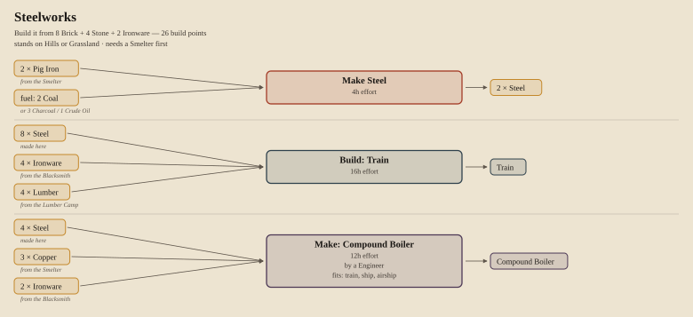
Three goods sit at the top of the tree and are marked tier three: steel, fine cloth and jewellery. Every unit of them counts towards your industry score, and so does the depth of your longest completed chain: see The game (Part 1). Every chain is drawn out, one diagram per building, in Annex I, The flows of work: find the thing you want on the right of a diagram and walk left until every input is something you can gather.
Recipes
A recipe is one job you can allocate a worker to. Every recipe has the same shape: a site where it runs, usually a tool, a number of effort hours, and the commodities that go in and come out. There are 88 of them, and everything a worker can be told to do is one, including construction work, which pays out in build-points instead of goods. One run of a recipe is a batch; you pay all of it and receive all of it, and the hours, worker slots and legality of a batch are in Effort and jobs (Part 5).
The recipes fall into nine categories: extraction, agriculture, husbandry, processing, crafting, brewing, arcane, civic and works. Civic jobs are trade, training and logistics, and they cost effort like any other job; works are construction and infrastructure labour.
Where a job runs
A recipe names one of six kinds of site:
A building, finished, in a town you own. Most recipes.
Bare ground of a named terrain: felling in a forest, cutting peat on a marsh or tundra, hunting on any hex with game.
A deposit, revealed, under the mine or derrick built on it.
Waterside: a land hex beside water. Angling for fish needs nothing built at all.
A construction site, for building work.
A figure on the map: a prospector surveys and plans routes wherever it stands.
A few recipes take either of two sites: felling timber runs on a forest hex or at a lumber camp, and drawing water runs at a well, on a marsh, or beside fresh water.
Tools and specialists
If a recipe names a tool, a worker without one cannot run it. Some recipes name a tool as a bonus instead: a plough halves the hours of sowing, and a scythe doubles a harvest. Some name a specialist: fine cloth takes a trained weaver, jewellery and tools take a smith, garments a tailor, potions an alchemist, brokering a merchant and nursing a healer. Training is in People, food and unrest (Part 7).
You can always work with your hands. Gathering deadwood, foraging, and angling for fish with a line need no building; gathering field stone and cutting peat need only a shovel; and hewing timber with an axe gives you lumber before you own a saw. These are slow, and they are the way back for a player who has lost everything.
Variants
Some jobs take different inputs for different results, and you choose which when you allocate. Spinning takes wool, flax or cotton; butchery takes cattle, a pig, a sheep or chickens; grazing breeds whichever animal you put in; serving drinks pours ale, mead or wine. A furnace recipe names a fuel bundle rather than a fuel, and you pay any one option in it: the bundles are in Effort and jobs (Part 5).
Things that take time
Some recipes pay out later. A sown crop sits on one of a farm's 4 field slots with a growth track, and is harvested by a second job when the track runs out. Livestock breeds in a pasture: one head and a sack of grain become two head after 2 rounds, chickens become three, and a horse takes two sacks. Wine sits in its barrel for 2 rounds before it can be sold or drunk; sold early, it fetches half. An orchard and a vineyard, once built, crop every round without re-sowing.
| Crop | Sow | Grows | Harvest |
|---|---|---|---|
| Grain | 4 h and 1 grain as seed | 3 rounds | 3 h for 6 grain |
| Vegetables | 4 h and 1 vegetables | 2 rounds | 2 h for 5 vegetables |
| Flax | 4 h and 1 flax | 3 rounds | 3 h for 5 flax |
| Cotton (warm ground only) | 4 h and 1 cotton | 4 rounds | 3 h for 5 cotton |
| Hops | 4 h and 1 hops | 3 rounds | 2 h for 4 hops |
A plough halves the sowing hours; a scythe doubles the harvest. Tending an orchard gives 3 apples, one more if an apiary stands on the next hex; a vineyard gives 4 grapes; an apiary gives 2 honey.
Jobs that roll a die
Two recipes roll instead of paying out a fixed amount. Forage needs no tool and no building: roll a die on the forage table for berries, mushrooms, vegetables or, on a 6, an arcane herb; a forest or a marsh adds 1, an elf adds 1, and tundra or desert takes 2 off. Survey is below.
Jobs that do something
Some recipes make nothing and do something instead. At a blacksmith a smith forges any tool, paying its own craft cost, and anyone with a hammer repairs one; a tailor sews garments and an alchemist brews potions the same way, each paying the item's listed inputs. Minding a market, brokering a trade and loading cargo are in Trade and the market (Part 9); training a specialist and serving drinks against unrest are in People, food and unrest (Part 7); tending the sick is in Events (Part 10).
What the ground offers
Bare ground is a site in its own right. Each terrain carries one or more features, and a feature says which jobs run there with nothing built. The terrain letter codes are on every hex and in Annex I, Terrain.
| Feature | Where | What it allows |
|---|---|---|
| Dense trees | F | 6 tree tokens. Felling removes one; when the last goes, the hex becomes grassland |
| Scattered trees | G | Two tree tokens |
| Exposed stone | H, M | A quarry may be built here |
| Fresh water | B, and any hex beside a river or lake | Draw water without a well |
| Fishing ground | R, L, S, O | A dock on the land beside it nets fish; a line from the bank catches half as much with nothing built |
| Game | F, H, M, T | Hunting |
| Herbs | F, M, B | Arcane herbs may be harvested |
| Reeds | B, R, L | Count as flax for rope-making, at 1 per 2 hours |
| Sand | D | A sand pit may be built here |
| Salt flat | D | Salt may be raked with a shovel, 1 per 2 hours, no mine needed |
| Caves | H, M | A discovery roll here can reveal a cave mouth: see Discovery and encounters (Part 11) |
Clearing a forest with an axe is a job of its own: it yields logs and flips the hex to grassland for good. There is no way to plant a forest back.
Deposits and surveys
A deposit is a source hidden under a hex: a coal seam, an iron deposit, a gem vein. It is not a commodity and never enters a stockpile. It is a place that yields one when the right building stands on it and somebody spends the hours. Deposits are face-down tokens laid under the map at setup (Setting up (Part 3)), and each one carries its own yield: the number of units it holds before it is worked out. Two coal seams are not the same prospect, and what a survey tells you is which one you found.
| Deposit | Yields | Hides under | Worked by | Tokens, richest first |
|---|---|---|---|---|
| Clay bed | clay | G, F, B | clay pit | 7, 6, 6, 5, 5, 4, 4, 3 |
| Sand bar | sand | — | sand pit | 9, 8, 7, 6, 5, 5 |
| Peat bog | peat | B, T | a shovel, nothing built | 8, 7, 6, 5, 4 |
| Coal seam | coal | G, H, M, T | mine | 8, 6, 5, 4, 3, 2, 2 |
| Iron deposit | iron ore | G, F, H, M, T | mine | 7, 6, 4, 4, 3, 2, 2 |
| Copper deposit | copper ore | H, M | mine | 8, 5, 4, 3 |
| Gold deposit | gold ore | G, H, M | mine | 6, 3, 1 |
| Gem vein | gems | H, M, D | mine | 5, 2, 1 |
| Salt dome | salt | G, D | mine | 9, 7, 5, 3 |
| Mana vein | mana crystal | F, H, M | mine | 4, 2 |
| Oil field | crude oil | G, B, T, D | oil derrick | 11, 6, 3 |
Surveying
A prospector entering a face-down hex turns it over, and that reveals the terrain at once. What is under it takes a survey: a job run by a prospector figure carrying a surveyor's kit, for 1 hour, on the hex it stands on.
Roll one die. Add 1 on hills or mountain, add 1 if the prospector is a dwarf, and add 2 if a trace tile lies on the hex.
On a 1 or 2 the ground is bad: no deposit is revealed.
On a 3 you find traces: you may survey this hex again next round at +1.
On a 4 or 5, turn the hex's deposit token face up, if it has one.
On a 6, turn it face up and it starts with 2 more yield than it prints.
A trace tile is placed by a discovery roll (Discovery and encounters (Part 11)) and stays until the deposit is found or ruled out. A deposit you reveal is not yours: it belongs to whoever builds on it first.
Open. Every deposit also carries a survey difficulty, from 2 for a clay bed to 6 for a mana vein, and whether that number replaces the 4 in step 4 for that deposit is not yet settled. Until it is, play the table above as written.
Working a deposit
A mine goes on a revealed mineral deposit and an oil derrick on a revealed oil field, one building per deposit, and what it produces is whatever lies under it. Every mining job draws units off the deposit: 2 per batch of coal, iron ore, copper ore or salt, and 1 per batch of gold ore, gems, mana crystal or oil. When the total drawn reaches the token's yield, the deposit is exhausted: turn the token over, and the mine runs no more jobs. A clay pit digs its bed without drawing it down. Dwarves cut mana crystal an hour faster, and elves will not work a mana vein at all.
Open. A peat bog and a sand bar are dealt as deposit tokens, but cutting peat and digging sand need no deposit and draw none down, so finding one changes nothing yet. Until that is settled, treat one as a sign of good ground and nothing more.
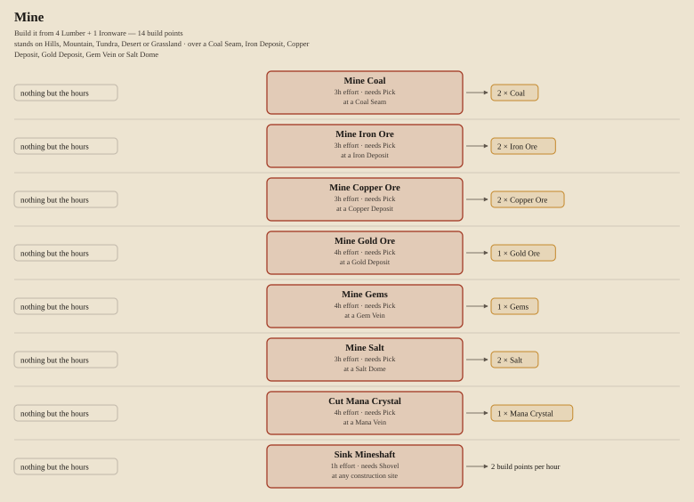
Drawing a finite good out of the ground is not what makes it dearer; burning it is. Each unit of coal, ore or any other finite good that a furnace consumes puts a pip on that good's depletion grid, and the pip never comes off: see Trade and the market (Part 9).
Buildings
A building stands on a hex, costs commodities to raise, takes build-points of work and a minimum number of rounds to finish, and then is a site where recipes run. There are 52, in eight categories. Costs, build-points and how construction is paid for are in Effort and jobs (Part 5); every building's numbers are in Annex I, Buildings, and its full card in Annex II.
| Category | What it does |
|---|---|
| Housing | Brings workers into a town |
| Extraction | Sits on a feature or a deposit and pulls raw goods out of it |
| Production | Turns commodities into other commodities |
| Storage | Adds slots to a town's stockpile |
| Civic | Trade, order and the machinery of a town |
| Military | Raising, housing and hiding behind soldiers |
| Arcane | Where the strange work happens |
| Infrastructure | Built onto hexes and water crossings rather than into a town |
What a building needs
A town. Every building except an inn or a piece of infrastructure stands in a town, and a town begins with a town hall: one per town, and always the first thing placed.
Ground. Most buildings name the terrain they will stand on; a building that names none goes on any land hex. Nothing is built on water, and no housing goes on a mountain. A quarry wants hills or mountain, a farm grassland, a lumber camp forest, a clay pit marsh or grassland, a sand pit desert.
Waterside. A dock needs a land hex beside any water; a harbour needs one beside the sea. A sand pit may stand beside any water instead of on desert. Waterside is defined in The map and travel (Part 8).
A deposit. A clay pit stands on a revealed clay bed, a mine on any revealed mineral deposit, an oil derrick on a revealed oil field.
A building you already have. A steelworks needs a smelter; a tailor needs a weaver's shed; a trading house needs a market; a harbour needs a dock; rail needs a steelworks and a rail depot needs rail. A winery must stand on or beside a vineyard.
The open road. An inn alone may stand outside a town, on any hex carrying a road, rail or a route you have travelled, for 2 extra lumber. It founds no town and stores nothing, and you may own 3 such inns.
Housing
A hut houses 1 worker, a timber house 2, a brick house 3, and a manor 4 workers and 1 specialist. Workers in a brick house ignore Cold Snap events. A manor scores 4 at the end of the game. Every worker is an effort die every round, which is why the first thing anyone builds is a hut.
Extraction and production
Extraction buildings are where the land is worked: the lumber camp lets you fell on any forest hex within one, and stores 4 bulk of logs on site; the quarry, clay pit, sand pit, mine and derrick dig; the well draws water; the farm sows on its 4 field slots; the pasture holds 6 head; the orchard, vineyard and apiary crop; and the dock nets fish. Production buildings turn one thing into another, and two of them work harder for where they stand: a sawmill on a waterside hex gives one extra lumber per batch, and a mill on hills or waterside gives extra flour. The steelworks only really works on coal. What each one takes and gives is in Annex I, The flows of work.
Storage
A town holds 10 slots of its own and 6 more in its town hall. A warehouse adds 12 slots for anything, and a granary 10 for food and drink only, where a perishable stack reads the spoil die one row kinder. Both are what a thief looks for first. What happens above the cap is in Effort and jobs (Part 5).
Civic, military and arcane
The market lets a town trade with the board; the trading house removes the spread for its owner and opens trade with other players; the guildhall trains one specialist a round; the inn serves drink against unrest, rests travellers and hires escorts; the infirmary tends the sick. The barracks turns fed workers into soldiers and holds 4 of them; the watchtower cancels one theft or raid event per game against its town and reveals the face-down hexes beside it; the palisade gives defenders an extra die: see Monsters and battle (Part 12). The alchemist brews potions and needs an alembic (Mana, talismans, spells and potions (Part 13)); the shrine lets you re-roll one effort die in its town each round and scores 1.
Infrastructure
A road costs 1 stone and 3 build-points per hex, halves land movement through it and carries carts. Rail costs 2 steel and 2 lumber per hex, scores 1 per hex, and trains load only at a rail depot. Both are multiplied by the terrain they cross. A bridge carries either across one hex of shallow water; a harbour lets ships load and unload. What they cost to cross, and what they pay their owner, is in The map and travel (Part 8).
People, food and unrest
PurposeWorkers are the game: every one of them is a die every round, and every one of them eats. This chapter is where workers come from, what they cost to keep, what happens when you cannot feed them, and how a worker becomes a specialist or a soldier.
Workers
A worker lives in a town and rolls one effort die there every Labour Roll. Workers come from housing and only from housing: when a housing building is finished, put new worker pieces in the town up to the beds it adds. A town can never hold more workers than its housing lodges, and a migrant card only brings people you have beds and food for.
| Housing | Lodges |
|---|---|
| Hut | 1 worker |
| Timber house | 2 workers |
| Brick house | 3 workers |
| Manor | 4 workers and 1 specialist |
What each costs to raise is on its card and in Annex I, Buildings. A worker cannot be moved from one town to another; it rolls where it lives.
Three kinds of piece live in a town:
A worker rolls one die and eats 1 food a round.
A specialist is a worker trained in a profession. It rolls the same die and eats the same food, and it unlocks the jobs its profession gates.
A soldier is a worker under arms. It rolls no die, eats 1 food a round, and fights.
Feeding
The Feeding phase is the fifth phase of the round (The round (Part 4)). In it every town pays 1 food for every worker, specialist and soldier living in it, out of the stock held in that town. Food lying in another town does not count, and neither does food on a cart between the two.
Count the mouths in the town.
Pay that much food and drink out of the town's stockpile. Any food commodity feeds one mouth per unit; bread feeds two; any drink feeds one, and a drink may lift a worker as well — ale gives one worker 1 extra hour next round, and a dwarf fed mead rolls one die size up.
A halfling town pays 2 extra food, whatever else lives in it.
Every mouth you could not feed adds 1 unrest to the town.
Then, still in this phase, goods above the town's storage spoil (Effort and jobs (Part 5)) and every perishable stack you hold anywhere rolls the spoil die (Trade and the market (Part 9)).
The variety bonus. Feed a town from 3 or more different food or drink commodities in one Feeding phase, and every worker in it rolls 1 extra hour next round. A town fed on nothing but grain gets no bonus, however much grain it has.
A feast is 2 food per mouth. It clears more unrest, below, and nothing else.
A specialist that is not fed cannot work its profession: a town whose only smith went hungry cannot forge anything this round, even if the smith is still there.
Unrest
Unrest is a count on the town. It starts at 0 and rises 1 for every unfed mouth in a Feeding phase, and event cards can add to it.
At 3 unrest the town riots. Every worker in it rolls a d4 instead of its own die until the unrest is cleared.
At 5 unrest a worker leaves, for good. Take one worker piece off the town.
A Strike card halves the effort of any town with unrest on it for a round.
Unrest clears slowly:
| Doing what | Clears |
|---|---|
| Feeding the town fully in a later round | 1 |
| A feast — 2 food per mouth | 2 |
| Serving ale at the town's inn | 1, and any Strike on the town ends at once |
| Serving wine at the inn | 2 |
| A Draught of Forbearance broached at the inn | 2 |
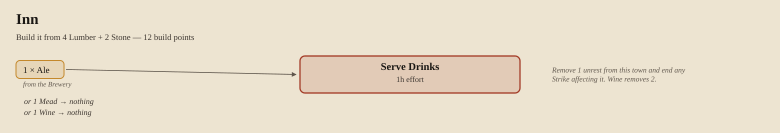
Serve Drinks is a job at an inn: one hour and one barrel. Every printed settlement has an inn; your own town needs the building.
Specialists
A specialist is trained at a guildhall. Train Specialist is a job there, one training per guildhall per round: name a worker in the town and pay the profession's coin, and from the next round that worker is a smith, a weaver, a merchant, a healer or whatever you paid for. The professions, what each costs to train and what each one does are in Annex I, Professions. Every profession belongs to one building — a smith to the blacksmith, a farmer to the farm, an engineer to the rail depot — and gives its bonus there.
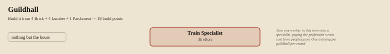
A job that names a profession cannot be run without a fed specialist of that profession in the town.
A specialist still rolls an ordinary effort die and may be allocated anywhere.
There are 11 professions.
Soldiers
A soldier is a worker under arms. It stops rolling effort, keeps eating, and can fight, escort a cargo or a party, and garrison a town. A barracks holds 4 soldiers without using a bed of housing, and a soldier on the map moves as a figure does (The map and travel (Part 8)). What a soldier is worth in a fight is in Monsters and battle (Part 12).
Open. No job yet says what it costs, in hours, to arm a worker. Until one does: at a town with a barracks, pay 30 coin and take a worker off the labour roll; it is a soldier from the next round.
Healers and illness
Some event cards make people sick or take workers away: Camp Fever, Marsh Ague, the Grey Pox and Plague. Every one of them names what would have blunted it. The building is the infirmary and the profession is the healer: a town with an infirmary and a fed healer loses no worker to Marsh Ague or the Grey Pox, and a healer's town loses one worker fewer to any illness card. Tend the Sick is the healer's job at the infirmary: cure one illness marker, or mend 2 health on a character resting there; spend a Physic Tonic with it and the whole town is cured. The cards themselves are in Events (Part 10).
The five peoples
Your people sets the die your workers roll, how many you start with, what they like to eat, and a handful of traits that apply to every worker and figure of yours all game. The full trait list is in Annex I, Peoples, and each people's page is in Annex II.
| People | Die | Start with | In a sentence |
|---|---|---|---|
| Humans | d6 | 2 | No edges and no gaps. Cheapest buildings, widest recipe access. |
| Dwarves | d6 | 2 | Underground and metallurgy. Slow above ground, unmatched below it. |
| Elves | d6 | 2 | Forest, textiles and the arcane. Terrible miners, superb weavers. |
| Halflings | d6 | 3 | Numerous, agricultural, and permanently hungry. |
| Orcs | d8 | 2 | Enormous output, no patience. Built for a short, aggressive game. |
How a trait is applied:
A trait that changes a die — a dwarf at a mine or quarry rolls a d8, an elf in any mine but a mana vein rolls a d4 — is a die step, taken in the order given in Effort and jobs (Part 5).
A trait that changes hours — a dwarf on a farm, orchard or vineyard rolls 1 less — is a flat modifier, and counts against the cap of 3 extra hours a worker can gain.
A trait that changes a cost — huts for halflings, housing for humans, tools for dwarven smiths — is applied when the job is run or the building founded.
A trait about ground — surefooted dwarves, longstriding elves — is applied to that people's figures and parties on the map.
A trait about food — a halfling town's second breakfast, a dwarf fed mead — is applied in the Feeding phase.
A people's strength is what every figure of that people, other than a character, swings with in a battle: 3 for a human, 4 for a dwarf, 2 for an elf, 2 for a halfling and 5 for an orc. Its burden is the kilograms it can still take on, 9 for a human, 12 for a dwarf, 6 for an elf, 6 for a halfling and 15 for an orc. A character uses the strength and burden on its own card instead. Only an elf holds mana in the body, up to 3; everyone else needs a talisman (Mana, talismans, spells and potions (Part 13)). Am. 2
The map and travel
PurposeThe world is a drawn map with a hexagonal grid over it, and everything that moves on it — a figure, a party, a cart, a ship — moves in legs. This chapter is the ground, what it costs to cross, what a road and a rail line do for you, and what a party spends by being out on it.
The ground
Every hex prints a terrain letter in its corner, and the letter is the ruling when the drawing straddles a line. The eleven terrains, their codes and what each one offers are in On the table (Part 2) and in Annex I, Terrain; each has a page in Annex II.
Waterside. A land hex with any water hex beside it is waterside. It is never printed; read it off the map when a rule asks for it. A dock goes on any waterside hex — a river bank, a lake rim and a sea shore all do. A harbour needs the sea beside it, and a dock already there.
Fresh water is a river, a lake, or a marsh, and any hex beside a river or a lake. Water can be drawn there without a well, and a town there ignores a Drought.
Exploring
On a drawn map the whole country is in view from the first round. What is hidden is under it: the deposit tokens laid face down at setup (Setting up (Part 3)). Finding one is a survey, and only a prospector can make one.
Stand a prospector on the hex. A survey is a job: 1 hour of the prospector's own effort, with a surveyor's kit.
Roll a d6. Add 1 on hills or mountain, 1 if the prospector is a dwarf, 2 if a trace tile lies on the hex, and 1 if the party carries binoculars.
On a 1 or 2 there is nothing here. On a 3, traces: survey the hex again next round at +1. On a 4 or 5, turn the hex's deposit token face up, if it has one. On a 6, turn it up and it starts with 2 more yield than it prints.
A revealed deposit belongs to nobody until somebody builds on it. Its yield is the number on the token; when that many units have been drawn, turn the token over and the mine on it is a shed. Which deposits hide under which ground, and how many units each holds, is in Commodities, recipes and buildings (Part 6).
A table playing on loose hex tiles instead of a drawn map deals them face down, and a prospector entering one turns it up for 1 hour; the deposit under it still needs a survey.
Figures
A figure is a piece that moves rather than works. Your hero is the figure your character card belongs to, one per player, free at setup. The other three are bought in the Actions phase at a town of yours and appear on its hex:
| Figure | Costs | Does |
|---|---|---|
| Prospector | 40 coin | Surveys deposits and plans routes; carries the surveyor's kit |
| Merchant | 60 coin | Trades without the spread wherever it stands, and reaches other players' merchants and trading houses |
| Soldier | 30 coin | Fights, escorts, garrisons; eats every round whether it fights or not |
Figures that travel together are a party, and a party moves as one at the pace of its slowest member. A vehicle carries figures as passengers where its card says so.
Legs
Every moving figure, party or vehicle gets one day leg a round, in the Actions phase. How far it goes is its pace: the number of hexes for its mode of travel on the ground it is crossing, read from the travel table. Set the P track on the board to that number at the start of the leg and walk it down one rung for every hex entered; at 0 the leg is over.
| Mode | On foot | Mounted | Cart | Caravan | Barge | Ship | Sled | Airship |
|---|---|---|---|---|---|---|---|---|
| Grassland | 4 | 6 | 3 | 2 | — | — | 1 | 5 |
| Forest | 2 | 2 | 1 | 1 | — | — | 1 | 5 |
| Hills | 2 | 3 | 1 | 1 | — | — | 2 | 5 |
| Mountain | 1 | 1 | — | — | — | — | 2 | 4 |
| Marsh | 1 | 1 | — | — | — | — | 2 | 5 |
| Tundra | 2 | 3 | 1 | 1 | — | — | 5 | 5 |
| Desert | 2 | 3 | 2 | 2 | — | — | — | 5 |
| River, lake | — | — | — | — | 3 | — | frozen only | 5 |
| Shallow water | — | — | — | — | 3 | 3 | frozen only | 5 |
| Deep water | — | — | — | — | — | 5 | — | 5 |
| On a road | 5 | 8 | 6 | 4 | — | — | — | — |
A dash is ground that mode cannot enter at all. Mounted travel needs a horse, either the commodity ridden or a horse card. A train runs only on rail, depot to depot, at 6 hexes a leg whatever the ground. On a road, use the road number whatever lies under it. A dwarf crosses mountain and hills a hex cheaper, an elf forest, and a party with a coil of rope hills and mountain; a travelling cloak, a staff, a map between two printed settlements, and a Fair Wind each add to a leg as their cards say.
Open. The table gives a pace for each kind of ground, and not for a leg that crosses more than one kind. Until it does, a leg is paced by the slowest ground it enters.
Every hex a leg enters that carries another player's road or rail pays that player a toll, below. When the leg ends, roll for discovery where you stopped — Discovery and encounters (Part 11).
Night legs
After its day leg a party may push on into the dark, and only with a light in hand:
| Light | The night leg |
|---|---|
| None | No travel at all, even on a road |
| A torch | 1 hex, or 2 on a road, whatever the mode. The torch's one use is spent |
| A lantern | Half the day pace, rounded up; the lantern takes 1 wear |
| A lantern and a compass | The full day pace, and the second discovery roll is made at the ordinary monster band |
| An Owl's Eye potion | As a lantern, for one round |
A train with a lantern fitted runs at night at full speed; a ship with one rigged sails at half. A night leg is never free: where it ends the party makes a second discovery roll with the monster band widened by 1, and every figure in it loses 1 strength for the night without a camp (below).
Caves
A discovery roll on hills or mountain can leave a cave mouth on the hex. A party may go in only with a lit torch or lantern — a torch spends one use, a lantern nothing — and going in resolves one draw on the cave table (Discovery and encounters (Part 11)). A cave that has been emptied is marked spent, and from then on it is a known camp: resting in it counts as an inn that costs no coin.
Wind
An airship pays no heed to the ground and every heed to the wind. Roll a d6 before each of its day legs: on a 1 the wind is foul and the ship moves 1 hex in a direction the player on your left chooses; on a 2 or 3 it is contrary and the ship makes half pace, rounded down; on a 4 or 5 full pace; on a 6 full pace and 2 hexes more. A sweep rig, a Fair Wind and an Aeronaut's Draught each change that roll as their cards say.
Winter
While a Hard Frost card is in play, and on tundra and mountain at any time, marsh, river, lake and shallow water are frozen. A sled crosses frozen water at the pace in the table; no other land mode may enter it, and no barge or ship may. When the frost lifts, a sled standing on a marsh or a water hex is lost with its cargo, so move it before the round ends.
Roads, rail and bridges
A road, a rail line or a bridge is built onto a hex rather than into a town, and it belongs to the player who paid for it for the rest of the game. Lay a route token along the hex's edge as it is finished; the token is the record, and an unmarked road belongs to nobody.
A road costs 1 stone and 3 build points a hex. Carts may use it, and everything on it moves at the road pace.
A rail line costs 2 steel and 2 lumber and 8 build points a hex, and you must own a steelworks. Only trains use it, and they board and leave it at a rail depot. Every hex of rail scores 1 victory point as it is laid.
A bridge costs 4 stone, 4 lumber, 1 ironware and 16 build points, and carries a road or a rail across one river, lake or shallow-water hex. Deep water is never bridged.
The ground multiplies the build points: a road through hills costs twice its points, through mountain four times, and rail six times through mountain. The multipliers are in Annex I, Terrain. A prospector's Plan Route job marks a surveyed line across up to three hexes, and road or rail built along it costs 1 build point a hex less. The construction jobs themselves are in Effort and jobs (Part 5).
The toll
Every hex of your road that another player's leg enters pays you 1 coin; every hex of your rail, 2. It is collected from the moving player the moment the leg ends, and no leg pays more than 6 coin however long it is. Nobody pays for their own roads, for a hex where their own road shares the line with yours, or while carrying a quest you accepted. A player may decline to pay and go round; they may not decline to pay and go through.
Haulage
Cargo that starts or ends its journey in a settlement your own road or rail reaches sells for 10% more than the town price. Towns joined by routes you built also score at the end of the game (The game (Part 1)).
Food and sleep on the road
A party out of town keeps itself. Two different things are spent, and they are mended two different ways: Am. 2
Hunger and Thirst each rise 1 rung every round a figure is on the road. Each unit of food eaten takes 4 rungs off Hunger, from what the party carries, forages or buys; each draught of water drunk takes 4 rungs off Thirst, from a waterskin or at a well, a marsh or any fresh water. Neither goes below 0. Am. 2
At the top of Hunger or Thirst (rung 20) the figure loses -1 health every round it is still there, and being fed or watered again does not put the health back. A pack of rations is a container: knock its capacity ladder down a rung for every meal eaten from it. Other food a party carries is a commodity, and a perishable one rolls the spoil die every round it is in the pack. Am. 2
A night without a camp costs 1 strength from every figure — a night leg, or a round ended without stopping. It stacks night on night, and at 0 strength a figure does not fight. Ins. 2
One night's sleep gives all the strength back, wherever it is taken: a camp on open ground, a spent cave, or a bed. A camp costs nothing.
Sleep mends no health at all. Health comes back only under medical aid: 3 a round from a healer or at an infirmary, 2 a round from a physician character standing there, or a potion, drunk. Care costs 5 coin a round, waived in your own town. A resting figure does nothing else that round.
A figure at 0 health is carried to the nearest settlement and stays there until healed to half, and everything it was carrying is lost on the way — see Heroes, vehicles and gear (Part 14).
Settlements and inns
The map prints settlements in four ranks — village, town, city and seat — and they belong to nobody. Every printed settlement has an inn of its rank; a town of your own has one when you build it. An inn does four things:
| At the inn | The rule |
|---|---|
| A bed | 5 coin a night, free in your own town. Restores strength in full and mends nothing |
| Hirelings | At any settlement of village rank or better: a thug, a militiaman or a hired blade escorts one journey — a party or a cargo — for a flat fee, eats nothing, and goes home. See Monsters and battle (Part 12) |
| Rumours | Pay 5 coin and draw a quest card; accept it or decline it. See Quests and campaigns (Part 15) |
| Drinks | Serve ale or wine to clear the town's unrest. See People, food and unrest (Part 7) |
A settlement is also where you shop and sell: what a merchant deals, and how a town's rank sets its stock, is in Trade and the market (Part 9). A vehicle is repaired at any settlement of town rank or better.
Trade and the market
PurposeA price is written on a ledger, moved once a round by dice, and read off a printed row of six figures. This chapter is the two ways to trade, how the Market phase fixes a price, what the four kinds of good do to it, who may deal with whom, and how goods are moved across the map.
Two kinds of trade
With the board. At any market you may buy or sell a commodity at the price the ledger shows, paying the house cut: buying costs 15% over the price and selling pays 15% under it. The board sells at most as many units of a commodity as this round's red dice rolled for it, first come first served in turn order through the Actions phase; it buys any quantity. A market is your own once you have built one, and every printed settlement keeps one.
With another player. Any goods, any coin, any price the two of you agree, with no spread and no limit. Two players trade whenever they can reach each other — heroes or merchants standing in the same hex or settlement, or trading houses joined by a route, below. Nobody enforces a bargain but the table.
Trading is an action, taken in the Actions phase at the price everyone can already see. Nobody trades in the Market phase; that phase only fixes the price for next round.
The price ledger
Every town whose market you use has a ledger: one column per commodity, headed by that commodity's token, one row per round. The figure in the last row that has not been struck through is the price now. Every commodity's six possible prices are printed as one row in Annex I, Every price in the game — grain's row is 3 · 4 · 5 · 6 · 8 · 10 — and a price is always one of those six figures. Nothing is ever multiplied at the table.
At setup every good stands on the middle figure of its row, its base value, and nothing is written. How the ledger is filled in, struck through and read is in On the table (Part 2).
The Market phase
In the Market phase one player rolls for every column on every ledger in use. For each column:
Roll 2 blue dice for demand, 2 red for supply and 1 green for volatility.
Add up the swing: demand minus supply, plus what the green die says, plus what the kind of good adds.
Find the net on the swing ruler and step the price that many places along the commodity's printed row. A price at the top of its row told to go up stays where it is; the same at the foot.
Write the new figure in this round's row, strike last round's through, and write the move in the move box: how many places it stepped, or a dash if it held.
| Green die | Season | Adds |
|---|---|---|
| 1–2 | Slack | −2 |
| 3–4 | Even | 0 |
| 5–6 | Rough | +2 |
| Net | ≤ −9 | −8 … −5 | −4 … −2 | −1 … +1 | +2 … +4 | +5 … +8 | ≥ +9 |
|---|---|---|---|---|---|---|---|
| Places | -3 | -2 | -1 | hold | +1 | +2 | +3 |
The whole sum is addition, and the dice are the same two colours a battle uses: blue is what you want, red is what stands in your way. A commodity is not rolled for until its token stands in a ledger seat, and a town rolls only for the goods on its own ledger.
An event card that moves a price — an iron shortage, a glut, a festival — steps it along the row as the card says, in the Events phase, and the move goes in the move box like any other. A card that holds a price for some rounds keeps it there through the Market phases in between.
The four kinds of good
Every commodity is exactly one of four kinds, and the mark in the corner of its token says which. Which commodity is which is in Annex I, Commodities.
 Staple
Adds nothing. The dice are the whole story, and more than half the goods in the game are staples: stone, lumber, cloth, rope, ale, salted meat.
 Perishable
Adds nothing to the swing either. Instead, at the end of every Feeding phase, every player rolls the ochre spoil die once for each stack of a perishable they hold — in a town, in a hold, in a pack — and discards what the strip says:
| Ochre | Keeps well | Keeps poorly |
|---|---|---|
| 1–2 | 0 | 1 |
| 3–4 | 1 | 2 |
| 5–6 | 2 | 3 |
Bread, vegetables and apples keep well; milk, fish, meat, eggs, berries, mushrooms, grapes and moon blossom keep poorly — the Commodities table in Annex I says which column each reads. You cannot lose more than you hold. A stack in a granary reads one row up the strip: a 5 or a 6 costs what a 3 or a 4 costs, and a 1 or a 2 costs nothing. The board's own stock never spoils, and spoilage never touches a price.
 Finite
Adds the lowest number still visible on its depletion grid. Stand the commodity's token in an empty grid's seat the first time a unit of it is burnt. Every time a unit is burnt — as fuel, as an input consumed by a recipe — the player who burnt it covers the lowest uncovered cell with a pip, in the Actions phase, as it happens. Pips never come off. Every 3 pips the grid reads 1 higher, up to 6; a fresh grid reads 0. Trading a finite good moves it and covers nothing: only burning counts.
 Sought
Adds the move it made last round: the figure in the move box on the row above, from -3 to +3. A dash adds nothing. Nothing has moved at setup, so the first round is played on the dice alone; a rise feeds a rise and a fall feeds a fall, and two quiet rounds bring it back to nothing.
Who may trade with whom
A market lets its town buy from and sell to the board at the ledger price, with the spread.
A merchant figure trades without the spread wherever it stands, and may deal with any player whose merchant or trading house is in or beside the same settlement.
A trading house removes the spread for its owner in that town for good, and reaches any other player's trading house or merchant along a built route, at any distance. Broker a Trade is the job that does it, one hour at the trading house.
A merchant specialist, trained at a trading house, may also broker a deal between two other players and take a tenth of the coin. A merchant wearing fine robes gets a tenth more on every sale.
Shopping
Items are bought from merchants, met on the road or visited in any settlement. Shuffle the items deck and deal cards face up: that is the stock this visit, at base value plus a tenth.
| Where | Cards dealt |
|---|---|
| A merchant met on the road | 2 |
| A village | 3 |
| A town | 5 |
| A city | 7 |
| The seat | 9 |
Weapons, armour and talismans are dealt from their own decks the same way. Tools are bought at any settlement of town rank or better with a blacksmith: deal from the tools deck instead. A vehicle is bought where its kind is built — Heroes, vehicles and gear (Part 14).
Moving goods
A commodity moves between towns as cargo, on a route, by one of eight modes. Capacity is bulk; speed is the pace in The map and travel (Part 8).
| Mode | Carries | Needs | Costs to buy | Eats a round |
|---|---|---|---|---|
| Porter | 3 | a worker, gone for the whole journey | nothing | — |
| Cart | 8 | nothing; a horse hitched adds 1 pace | 35 | — |
| Caravan | 24 | a road; two horses add 1 pace | 120 | 2 |
| Barge | 30 | a dock | 110 | 1 |
| Ship | 60 | a harbour | 280 | 3 |
| Train | 80 | a rail depot; 1 coal a hex | 350 | 4 |
| Sled | 10 | nothing; the team eats 2 meat a round on the road | 90 | 2 |
| Airship | 18 | nothing; 1 charcoal a hex | 520 | 5 |
Upkeep is coin, paid each round the vehicle is in use. A named vehicle card runs as its mode with its own hull and hold: Heroes, vehicles and gear (Part 14).
Loading and routes
Load Cargo is a job at the town hall: one hour, plus the mode's own loading effort — 1 for a porter or a cart, 3 for a caravan, 4 for a ship. The goods leave the stockpile and go on the vehicle's board, or on a cargo token for a mode with no card.
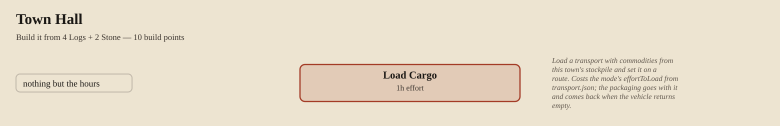
Packaging goes with it. Every mode needs crates or sacks from the stockpile — two sacks for a porter, two crates and two sacks for a cart, twelve crates for a ship; the full list is in Annex I, Transport modes. They travel with the cargo and come back with the empty vehicle.
Choose a route. A route starts and ends at a settlement, and every hex on it must be one the mode can cross. A cart or a caravan runs at road pace on a road; a train needs rail on every hex. A route that meets water needs a bridge, or the cargo changes to a barge or a ship at a dock or a harbour.
Move it a leg a round. Cargo in transit is on the map for everyone to see, and can be robbed by event cards and raided by players. Where it ends a leg it rolls for discovery like any traveller.
Arriving cargo goes into the destination's stockpile at the Production Tick. If there is no room for it, it spoils.
An escort — a soldier, or a hireling from an inn — drops a cargo's theft risk to nothing, and eats every round of the journey. A porter is a worker, and it rolls no effort until it is home.
Coin is cargo too, when there is enough of it to matter: on a figure's back it weighs 40 to the kilogram (Heroes, vehicles and gear (Part 14)); in a strongbox on a wagon it is bulk, and it is stolen like anything else on the road.
Events
PurposeEvery round opens with the event deck. Each player turns a card, and the card says whose problem it is, what it does, and — on the disaster cards — what you could have bought to blunt it. This chapter is how the deck is drawn and how a card is read.
Drawing
The Events phase is the first phase of the round (The round (Part 4)).
In turn order, each player reveals the top card of the event deck and resolves it in full before the next player draws.
From round 13, the first player reveals and resolves a second card after their first.
When the deck runs out, shuffle the discard pile and carry on.
The deck is 96 cards; some cards are in it more than once, and a card's number of copies is printed on its page in Annex II, Events.
Reading a card
A card carries its name, its category, its scope, a line of story, and then one or more sentences saying what happens, in order. Do what the sentences say, in that order.
| Scope | Who it hits |
|---|---|
| Global | Applies to every player, whoever drew it. |
| Local | Applies to one region of the board - roll for the region. |
| Targeted | Applies to the player who drew it - except crime cards, which target the leader. |
| Offer | An opportunity. The drawer decides first; if they pass, it goes round in turn order. |
A global card is everyone's, whoever turned it.
A local card hits one region of the board. Roll for the region.
A targeted card hits the player who drew it — except a crime card, which hits the leader whoever drew it.
An offer is a chance rather than a blow. The player who drew it decides first; if they pass, it goes round the table in turn order until somebody takes it or everyone has passed.
A choice on a card names its branches. The player the card hits picks one and does what that branch says.
Open. Neither how a region is rolled for nor who counts as the leader is settled. Until it is: number the board's regions and roll a die for one, and the leader is the player with the most victory points by the count in The game (Part 1), the first player breaking a tie.
A card that lasts — a frost for a round, a shortage for three, a widened monster band for two — stays face up beside the deck until its rounds have passed, and its effect stands through every phase in between. Mark the round it ends on.
What a card can do
Cards do one or more of these, and each card's sentences say which:
change how many hours workers roll, or step their dice;
take commodities from a stockpile, or give some;
move a family of commodities along its price row for some rounds;
damage, halt or destroy a building;
add wear to tools, or break them;
add or take workers, or add unrest;
block a route or slow travel;
take or spoil cargo in transit;
start a fight — raiders at a town, a wolf pack in a region, a dragon on a mountain;
stall or advance growing crops;
hurt or heal characters and figures on the road;
widen or shrink the monster bands of the discovery tables.
A price move from a card is taken in the Events phase and written in the ledger's move box like any other (Trade and the market (Part 9)). A fight from a card is run on the encounter board like any other (Monsters and battle (Part 12)). A widened or shrunk monster band is applied to every discovery roll while the card stands (Discovery and encounters (Part 11)).
Categories
| Category | What it brings |
|---|---|
| Weather | Frost, drought, storms and long summers: the seasons turning |
| Natural disaster | Flood, earthquake, wildfire, a mine collapsing |
| Crime | Heists, robbery on road and rail, piracy, a smuggler's offer |
| Wildlife | A wolf pack, a boar in the crops, a dragon sighted, the Quiet Season |
| Conflict | Raiders, a border dispute, mercenaries for hire |
| People | Plague and the other illnesses, migrants, strikes, festivals |
| Market | Shortages, a glut, foreign demand, a tax levy |
| Industry | A bad smelt |
| Arcane | Ley surges, a curdled brew, a wandering wizard, the Blood Moon |
Weather and market cards are the common ones. Crime hits whoever is ahead.
Illness
Four cards make people sick, in order of reach: Camp Fever hits one travelling party, Marsh Ague one region, the Grey Pox every sizeable town on the map, and Plague a region hard. Each one names what blunts it, and it is always one of three things:
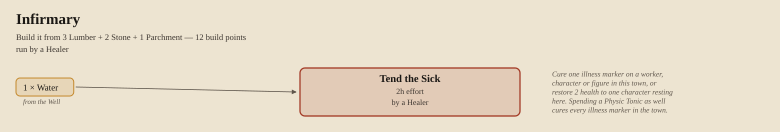
a Healing Draught or a Physic Tonic in stock, spent;
an infirmary with a fed healer in the town, which loses no worker to Marsh Ague or the Grey Pox and one worker fewer to any illness;
the right character in the party — a physician shrugs off Camp Fever.
Tend the Sick, the healer's job at the infirmary, cures an illness marker after the fact (People, food and unrest (Part 7)).
What could have prevented it
Every disaster card lists at least one thing a player could have bought in advance: brick houses ignore a frost, a well rides out a drought, a watchtower cancels one heist a game, an escort turns a robbery, a palisade and a garrison meet raiders at the gate. Those mitigations are not printed on the card. They are printed with every card in Annex II, Events, and gathered into one table in Annex I, What could have prevented it. If a card wipes you out, that table is where you find the name of the building you did not put up.
Discovery and encounters
PurposeThe land does something back. Every time a figure, a party or a vehicle ends a leg, a d20 on the table for the ground it stopped on says what: nothing, most often; a merchant, a traveller, bandits, a trace worth surveying, a cave, a monster, or an omen. This chapter is the roll, every result, and how a living thing you meet is run.
The roll
When a leg ends — a day leg or a night leg — roll a d20 on the discovery table for the hex you stopped in. One roll for the leg, never one per hex crossed.
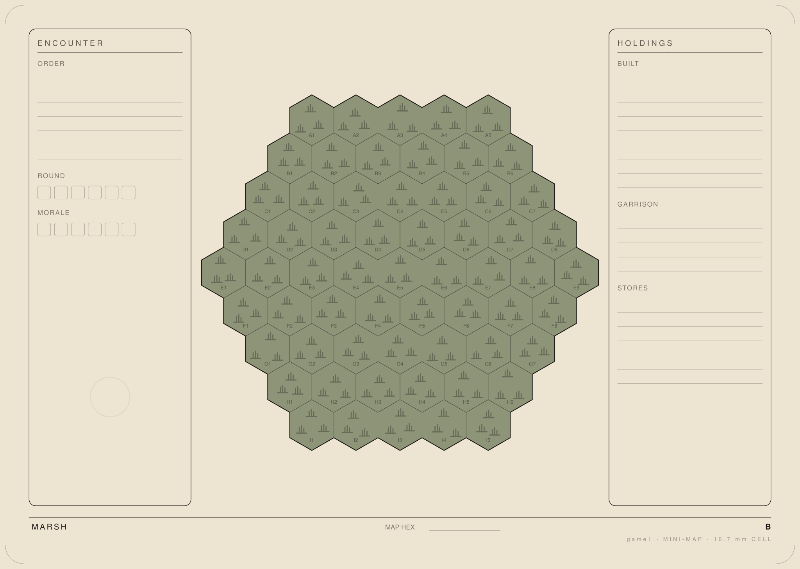
Read the table by the hex's terrain letter. A hex with a road or a rail line on it uses the road or rail table instead of its ground.
Do what the result says. A result that persists — a monster, a trace, a cave, a quest site — is marked on the hex with a tile or a figure so the whole table can see the world filling in.
The tables are in Annex I, Discovery tables. Roads grow merchants, travellers and bandits; desert, mountain and marsh grow monsters; a trace is rare everywhere, because discovery is what you find when you are not looking. Surveying, foraging and hunting are jobs of their own, and a discovery roll never stands in for one.
Moving the bands
Each table's monster band can be widened or shrunk. A band widens by claiming that many rolls below its printed bottom; it never claims 1 and never claims 20, which is always the omen. A band shrunk past its own top simply does not occur. The modifiers stack.
| When | The monster band |
|---|---|
| The roll after a night leg | widens by 1 |
| Within one hex of any settlement | shrinks by 2 |
| While Blood Moon is in play | widens by 3 |
| While the Quiet Season is in play | shrinks by 2 |
A party with binoculars may re-roll one discovery roll a round and keep the second. A party with a lit lantern under a Blood Moon may always withdraw before a monster encounter begins.
The results
Nothing. The country is long and empty. Move on.
Travelling merchant. Shuffle the items deck and deal 2 cards face up; that is his stock, at base value plus a tenth. He has also heard prices: learn the current price of one commodity family in the nearest settlement.
Traveller. News on the road. Look at the top card of the event deck and put it back, or look at the top card of the quest deck.
Bandits. Strength 2, plus 1 for every full 20 bulk of cargo the party carries. Fight them, or pay a toll of a quarter of the value of what you are carrying. An escort — a soldier or a hireling — rolls first.
Monster. Draw from the monster deck until the drawn monster's ground includes this hex's terrain, shuffling the others back. Deal it onto the encounter board and resolve it — Monsters and battle (Part 12).
Trace. Something worth digging showed in a cutting or a stream bed. Put a trace tile on the hex: a survey here is at +2 until the deposit is found or ruled out.
Cave mouth. Put a cave tile on the hex. A party with a lit torch or lantern may enter, now or on any later visit; entering resolves one draw on the cave table — hazard, nothing, a trace, a monster, a hoard or an omen. A cave once emptied is marked spent and becomes a known camp (The map and travel (Part 8)).
Omen. Something stranger than the road. Draw the top card of the quest deck; accept it or put it on the bottom (Quests and campaigns (Part 15)).
Hazard. A washed-out track, a sand-slip, rotten ice. The leg ends here, and each character takes 1 damage unless the party discards a coil of rope or lets one tool take 4 wear.
Pirates. Strength 3. Fight, pay three tenths of the cargo's value, or run and lose half your pace on your next leg.
Flotsam. A wreck, or the leavings of one. Gain 2 bulk of one commodity, chosen at random from the Commodities table in Annex I, and rolled again if it is livestock.
Hoard. Something laired here once and left in a hurry. Gain 20 coin and one card dealt from the items deck.
Open. Bandits and pirates print a strength and nothing else. Until they are given a card: they fight with armour 0, one exchange settles it, and a party that loses the exchange pays the toll as well as the wound.
Running an encounter
A discovery roll that turns up a living thing hands it to the encounter board, the spare player board every table prints (On the table (Part 2)):
Shuffle the deck the result names — monsters for a beast, characters for a stranger on the road — and deal one card face up into the board's IN PLAY recess.
Set the board's tracks from the card's strip, exactly as a player sets their own: H, S, P and M. Armour is printed and does not move.
The player to the left of whoever drew it runs it, as a player who is not a person. It now has everything a player has.
When the encounter ends, put the card away: back into its deck; onto the hex as a lair, if the monster is left unresolved; or into the winner's hand, if it was befriended, enslaved or domesticated. Clear the board. Nothing is written down.
A monster left on its hex is a lair. It attacks any party that ends a leg there, and event cards may move it. The wild accumulates.
A stranger dealt from the character deck is a character like any other, run by the player to the left for the length of the encounter. What they want of you is theirs to say.
Monsters and battle
PurposeA battle is one subtraction, and it is the subtraction the market already taught you: your total against theirs, the lower loses the difference, and blue is what you want while red is what stands in your way. This chapter is what you may do when you meet a monster, how a fight is scored, what running costs, and what a slain monster is worth.
Meeting a monster
A monster is dealt onto the encounter board the moment a discovery roll, a quest or an event card names it (Discovery and encounters (Part 11)). Its card prints five numbers and a mark: H health, S strength, A armour, P pace, Y the most mana its death is worth, and its element. Every monster is in Annex II, Monsters, with what it allows and what it wants.
Meeting one is a choice, and the choice is yours unless the card says otherwise. Slay is always allowed; the card says which of the other three it allows.
| Option | How | What you get |
|---|---|---|
| Slay | Fight it to 0 health | Mana of its element: the lesser of its Y and a roll of the purple die |
| Enslave | Beat it by 2 or more without taking it to 0 — say so before you roll | A worker that rolls a d4 in one of your towns, eats 1 food a round, and adds 1 unrest while it lives there. No mana |
| Befriend | Give the gift its card names, then roll a d6 and add your Charisma (the C track): 4 or more | It guards its hex for you, or travels with your party as an escort of its own strength. It leaves the first round you cannot feed it. No mana |
| Domesticate | Befriend it, or win without killing it; then spend two rounds in a row with it at a pasture | Livestock, with the benefit its card names. No mana |
| Flee | Only if your pace is greater than its P | Nothing — and no discovery roll this leg |
A monster whose card allows none of the three is fought or fled and nothing else. Some monsters carry a special rule on their card in place of a fight, and the card is the rule.
Running away
You may run only if your party's pace for the leg it is on — the number on the P track — is greater than the monster's P. Equal is not greater: a thing that matches you stays with you, and there is no roll to make it otherwise. A party that cannot outpace what it has met may not decline the fight; it may still befriend it, offer it something, or fight.
If you can run: withdraw the way you came, end your movement, make no discovery roll for this leg, and loot nothing. A monster of strength 4 or more gets one free exchange against a fleeing cargo vehicle whatever its pace.
A party on foot in the mountains has a pace of 1 and outruns nothing. A party under a lantern at night has half its pace, and pushing on past dark is the cheapest way in the game to be caught.
The battle roll
One exchange is one round of battle, and a battle is one exchange in each round of the game while both sides stay.
You add up your strength, your gear, and 2 blue dice.
It adds up its strength, its armour, and 2 red dice, rolled by whoever is running it.
The lower total loses health equal to the difference. Walk that many rungs off the loser's H track. A tie wounds nobody.
Gear is your weapon's battle number plus every piece of armour you are wearing, each added once. A monster's gear is its armour and nothing else; its weapon is itself. A soldier or a hireling fights on its own strength and whatever it carries; a figure without a card fights on its people's strength.
A third die. A few things grant an extra die of your own colour — a steel sword, a hired blade, an orc attacking, Ruk of the Red Road guarding a cargo. Roll it and keep the best two. It is the only place in the game where more dice are rolled than are counted. A halfling unit rolls one blue die instead of two.
Wear. Every weapon swung and every piece of armour worn takes 1 wear at the end of every round of battle, both sides, win or lose. A blow you turned still dented the plate; a sword that goes to 0 mid-fight leaves you swinging with nothing.
Riders. Many weapons carry a clause — a war hammer takes the whole of the other side's armour off their total, a boar spear holds off a charge, a crossbow counts only every second round, a bow needs a quiver. The card is the rule. A potion or a spell that changes a fight is drunk or cast before the dice are rolled.
After an exchange either side may withdraw if it can — for you, the flee rule above; for a monster, its own pace — or stay for the next round. A monster left standing on its hex when the party goes is a lair.
Open. What an inconclusive exchange leaves behind — whether a monster that neither fled nor fell pursues, heals, or simply waits — is not settled. Until it is, it waits on its hex at the health it has, and a party that leaves it leaves it there.
Health, and what happens at nothing
A character at 0 health falls. It is carried to the nearest settlement, stays there until it is healed to half its H, and loses everything it was carrying on the way — see Heroes, vehicles and gear (Part 14). A monster at 0 is slain. A vehicle at 0 hull is wrecked and spills its cargo on the hex.
What a slain monster yields
The moment a monster reaches 0 health, roll the purple mana die once. You take the lesser of that roll and the monster's Y, in the monster's element, split among the characters who fought it as they agree. A cinder wolf yields 1 on any roll but a 1; Vhalrik yields 6 only on a 6. Mana with nowhere to be held blows away at the end of the round — Mana, talismans, spells and potions (Part 13). Enslaving, befriending and domesticating pay no mana at all.
Hirelings
Between a soldier you feed every round and a war you cannot afford there is the inn. At any settlement of village rank or better a hireling escorts one journey — a party or a cargo — for a flat fee, eats nothing, and goes home. It fights at the numbers on the inn's board:
| Hireling | Fee | Strength | Armour | Weapon | |
|---|---|---|---|---|---|
| Thug | 20 | 4 | 0 | +1 | Refuses any monster of strength 4 or more; counts as a soldier for an escort |
| Militiaman | 35 | 3 | 2 | +1 | Fights anything |
| Hired blade | 60 | 5 | 1 | +2 | Fights anything, and rolls a third blue die |
An escorted cargo has no theft risk.
Fighting other players
You may attack another player's town, or their cargo on the road, in your Actions phase, with soldiers or your hero standing on the hex. Each side totals its figures as above. The winner takes 25% of the loser's stockpile or cargo — an orc takes 40%.
A palisade gives every defender behind it a third blue die, kept best two.
A garrison — the soldiers in a barracks — defends automatically, without being ordered.
A watchtower cancels one theft or raid a game against the town it stands in.
A pike is +3 rather than +1 when defending a town or a wall.
Raiders, a wolf pack and a dragon out of the event deck attack the same way, run by the player to the left, so a town with no soldiers at all is taking a real risk rather than a safe one. Soldiers produce nothing and eat every round, which is the price of keeping a warehouse.
Mana, talismans, spells and potions
PurposeMagic is small and it is economic. Mana comes out of dead monsters, is held in a body or a talisman, and is spent on spells that buy hours, movement, safety and repair. Potions are brewed out of things that grow, and are drunk once. This chapter is how mana is held and spent, and what the arcane trade is made of.
Mana
Mana is not a commodity. It has no bulk, sits in no stockpile and goes in no crate. It is held, and it is counted on the M track of the player board whose card holds it (On the table (Part 2)).
Gained. Slaying a monster yields mana of its element: the lesser of the monster's Y and one roll of the purple die, split among the characters who fought (Monsters and battle (Part 12)). Some quests and hoards give mana outright, at the number they name, with no die.
Held. Mana lives in a body that can hold it — an elf holds up to 3, and a few characters print an M of their own — or in a talisman in a kit slot. Your M track may climb to the M on your card plus the M of every talisman in your slots, and no higher. Mana you gain with nowhere to hold it blows away at the end of the round.
Keeps its element. Mana is fire, earth, water or air, as the monster was. A talisman may hold a mix; note each element's share beside the track.
Passed and stolen. Characters in the same hex may pass mana between talismans freely. Mana in a talisman is stolen with the talisman, and a talisman is an item like any other.
Spent. On spells, below, and on enchantments. Mana of the wrong element casts nothing.
Talismans
A talisman is an item from its own deck, made at an alchemist, bought from merchants, sold and stolen like anything else. Its card prints one number, M, the most mana it holds, from 2 for a bone charm to 10 for a crystal phylactery. A talisman never wears: it has no W box and takes no pip. Every talisman is in Annex II, Talismans.
Spells
A spell is cast by a character holding the mana it costs, in its element, in the body or in a carried talisman. Workers, soldiers and hirelings do not cast.
One spell per character per round.
Cast it when its effect makes sense: a combat spell before the dice are rolled, Mist Veil after the discovery roll.
Pay the cost off the M track as it is cast.
| Spell | Element | Mana | What it does |
|---|---|---|---|
| Kindle | fire | 1 | Light for a party until dawn, or one furnace batch without fuel |
| Ember Lash | fire | 3 | Two extra dice for one fighter for one battle |
| Wayfire | fire | 3 | Burn a blocked route open, or cross one forest or marsh hex free; the hex is scorched for good |
| Mend Stone | earth | 2 | Mend 2 on a building or vehicle, or 4 wear on a tool |
| Bulwark | earth | 4 | One fighter ignores 2 of the difference in one battle |
| Seam-Sense | earth | 3 | Look at the deposit tokens under your hex and every hex beside it |
| Root-Snare | earth | 3 | One monster, party or figure in or beside your hex may not move next round |
| Cleanse | water | 2 | Cure one illness marker, or mend 2 health |
| Mist Veil | water | 4 | One monster, bandit or pirate result becomes Nothing |
| Deep Draught | water | 2 | Fill every empty barrel in one town with water; it ignores Drought this round |
| Fair Wind | air | 2 | +2 hexes on one leg, +3 for a ship |
| Farspeak | air | 2 | Speak with any character on the board and strike a bargain at that distance |
| Loft | air | 4 | Lift one vehicle over one impassable hex |
| Stormcall | air | 5 | One party, vehicle or cargo you can see loses its next leg |
The exact wording of every spell is on its card and in Annex II, Spells; where this table and the card differ, the card is the rule.
Enchantments
A spell is spent and gone; an enchantment is mana laid into a thing and left there.
Where. At an alchemist, or at a shrine for half again the mana, rounded up.
Who. A character holding the mana, as for casting. Binding takes the character's whole round.
One per object. Binding a second enchantment on a thing breaks the first, and the mana in it is gone.
Broken. A destroyed object takes its enchantment with it; some event cards break one outright. A broken enchantment refunds nothing.
Worth. An enchanted object sells for its base value plus 20 coin for every mana bound into it, and scores 1 victory point for every 4 mana bound, rounded down.
There are 6 enchantments for buildings, tools, items and people — a hearth that burns without fuel, a tool that takes no wear, a cellar in which nothing spoils — and they are in Annex II, Enchantments. Enchantments bound onto a vehicle are modifications, and share a vehicle's slots with its fittings: Heroes, vehicles and gear (Part 14).
Mana crystals and herbs
Two arcane commodities feed the trade, and unlike mana they are goods: stored, carried in bulk, priced and stolen.
Mana crystal is mined from a mana vein, the scarcest deposit on the board (survey difficulty 6). Its holder may shatter one for 2 mana of any one element, held at once or lost; mana never freezes back into crystal. Elves will not mine it.
Arcane herbs, moon blossom, ember root and frost lichen are foraged and gathered. Forage needs nothing at all and finds an arcane herb on a 6; Harvest Arcane Herbs needs a knife on forest, marsh or mountain, and an elf takes two. Moon blossom opens only after dark and is picked on a night leg.
Potions
A potion is brewed at an alchemist by an alchemist specialist with an alembic: Brew Potion is a job of 3 hours and 1 water, plus the ingredients the potion lists. A potion is an item in the items deck, drunk once and discarded; it has no W box. Every potion buys something the game already counts — hours, movement, a wound mended, a survey made, a price shifted, a night walked — and the full list is in Annex II, Items. A Draught of Vigour steps a worker's die up two sizes; a Healing Draught cancels a worker lost or mends 3 health; Owl's Eye lets a party walk a night as if under a lantern; a Physic Tonic cures one illness anywhere. A potion brewed by an alchemist specialist lasts one round longer than its card says.
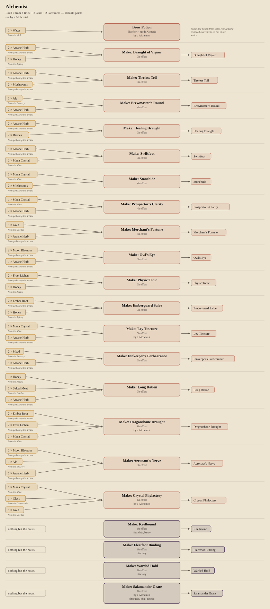
Heroes, vehicles and gear
PurposeYour hero is a card in a recess, 2 things in kit slots, and eight tokens on tracks; a vehicle is exactly the same, on a board of its own. This chapter is what a character carries and how much, what happens at nothing, what wears when, and how a vehicle and its fittings are run.
The hero
Every player has one hero figure, and the character card in the IN PLAY recess is who it is. The card prints a name, a calling, two traits, and a summary strip — H health, S strength, B burden, C charisma, F hunger, T thirst, P pace, M mana held in the body and ¤ the coin it starts with — and the board is set from the strip at setup (Setting up (Part 3)). The traits apply for the whole game. Every character is in Annex II, Characters. Am. 2
A hero moves as a figure and travels as a party with whoever goes with it (The map and travel (Part 8)). It rolls no effort: heroes are figures, not workers.
Burden: what a figure carries Am. 2
Strength is for battle only. What a figure carries is its Burden: the kilograms it can still take on, printed in the B box of its card and counted down on the B track. Am. 2
At setup, set the B marker to the B box. Am. 2
Whenever the figure wears, wields or stows something, move the marker down by the item's KG. Whenever it puts something down, move it back up. Its purse counts too, at 40 coin to the kilogram. Am. 2
A figure may not take up an item that would take its Burden below 0: load the thing onto a vehicle, hand it to someone with room, or leave it where it lies. Am. 2
A bag adds 2 kg to the Burden and a satchel 4; a Weightless Hand enchantment adds 10. Ins. 2
Commodities in transit are cargo and measured in bulk, not mass; mana weighs nothing, though the talisman holding it does. A figure with no card starts with its people's Burden (People, food and unrest (Part 7)). Am. 2
Health and strength at nothing
At 0 health a character falls. It is carried to the nearest settlement, stays there until healed to half its H under medical aid, and loses everything it was carrying on the way — except what a card keeps: a dirk is never lost, and one item named when a satchel was packed stays in it.
At 0 strength a figure does not fight. One night's sleep puts all of it back. Am. 2
At the top of Hunger or Thirst a figure loses -1 health every round — see The map and travel (Part 8). Ins. 2
What mends each is in The map and travel (Part 8).
Kit
A hero carries at most 2 things in play, one per kit slot on the board, and one more means putting one down. A thing in a slot is a card: a weapon, a piece of armour, clothing, gear, a light, a pack of rations, a potion, a talisman, a tool. Anything else the hero owns is left in a town's stockpile or on a vehicle. Some cards share a slot by their own rule — a dagger sits in a slot with another weapon — and some refuse company: a two-handed weapon cannot be used with a shield. Am. 2
Every item is one of eight classes, and each is in Annex II under its own deck:
| Class | What it does | Wears |
|---|---|---|
| Weapon | Adds its battle number to your total | 1 a round of battle it is swung in |
| Armour | Adds its armour number to your total, once per piece worn — body, head, off-hand | 1 a round of battle it is worn in, win or lose |
| Clothing | Shrugs off weather and event penalties | as its card says |
| Gear | Rope, a hook, a bag, a glass, a map, a compass, a quiver | as its card says: a leg it is used on, a fall it stops |
| Light | Walks the night and enters caves | 1 a night leg or cave: a torch has 1, a lantern 8 |
| Provision | Food for the road; its wear is the days left | 1 for every figure it feeds at the end of a round |
| Potion | Drunk once | never: discard it on use |
| Talisman | Holds mana | never |
Wear
When a thing goes into a slot, set the pip on the wear ladder beside it to the W on its card. Knock it down 1 rung for every use its class says. At 0 the thing is finished: discard the card, clear the ladder, and whatever it was doing for you stops at once. A blacksmith mends up to 3 rungs a round at 4 coin a rung and 2 hours of somebody's labour, never above the W on the card; a thing at 0 cannot be mended, because it is gone. The full wear table is in Annex I, Wear, and tools are in Effort and jobs (Part 5).
Vehicles
A vehicle card is a specific machine — a named engine, a ship with a history, a horse — and it runs on the rules of its mode: the capacity, pace, needs, fuel and upkeep in Trade and the market (Part 9) and The map and travel (Part 8). The card prints two numbers, H the hull and C the bulk its hold takes, and a quirk, and where the card and the mode differ the card wins. Every vehicle is in Annex II, Vehicles.
A vehicle is built at the building its mode names — a cart or a sled at a carpenter's, a barge at a dock, a ship at a harbour, a train at a steelworks, an airship at a glassworks — paying the mode's inputs and hours, or bought for the mode's price at a settlement that could build it.
Open. How a particular vehicle card is dealt when one is built or bought is not settled. Until it is, draw from the vehicle deck until a card of the right mode turns up, and shuffle the rest back.
Running one
Deal it a player board of its own. The card goes in the IN PLAY recess and the hull on the H track, set from the H box.
Its cargo and its modifications lie in the 2 kit slots. C is how much bulk the hold takes; there is no token for it — the cargo is what is in the slots. Am. 2
It moves as its mode, one leg a round, rolling for discovery where it stops, and it may carry figures where its card says.
Damage from a fight, a hazard or an event walks the hull down. It is repaired at any settlement of town rank or better, 1 rung a round for 5 coin a rung; an engineer character mends one free.
At 0 hull it is wrecked. It spills its cargo on the hex, and salvage belongs to whoever reaches it first. Its fittings are salvaged on a d6 of 5 or more, one roll each; an enchantment never survives.
A vehicle belongs to its owner and needs no character aboard; a soldier or a hireling aboard escorts it.
Modifications
A modification is a fitting or an enchantment bolted, stitched or bound onto a vehicle after it is built. It is the one thing a player makes for a vehicle during a game, and every one is in Annex II, Modifications.
Slots. A vehicle carries as many modifications as its mode's tier: 1 on a tier-one mode, 2 on tier two, 3 on tiers three and four. One modification per slot, and never two of the same.
At most 1 enchantment, whatever the slot count. Binding a second breaks the first and its mana is gone.
Fitting. A modification is fitted at the building named on its card, over one whole round, with the vehicle standing there, paying its inputs and hours — or its mana, for an enchantment, by a character holding it.
Removing a fitting takes a round and returns half its inputs, rounded down. Removing an enchantment breaks it and returns nothing.
Worth. A modification adds its value to what the vehicle sells for, and an enchanted vehicle adds 20 coin for every mana bound.
Wrecked, a vehicle takes its modifications with it, saving fittings on a 5 or more as above.
A modification changes the numbers on the card it is tucked under and has none of its own: it carries no H, no C and no W.
Quests and campaigns
PurposeA quest is a card you may take or leave; a campaign is a story the whole table plays through in order. This chapter is how a quest reaches you and what accepting it means, and the rules that every campaign shares. Each campaign's own rules, board, cast and chapters are in its annex — Campaign I, Homer's Odyssey, is Annex III.
Quests
There are 8 quests in the deck, from an errand with a wage to a five-stage campaign quest that shapes a game, and every one is in Annex II, Quests. A quest reaches you in one of two ways:
an omen on a discovery roll, which draws the top card of the quest deck (Discovery and encounters (Part 11));
a rumour at any inn: pay 5 coin and draw the top card (The map and travel (Part 8)).
Read the card aloud, and accept or decline it on the spot. A declined card goes to the bottom of the deck for somebody else.
An accepted quest sits face up beside your board until it is done or given up. It takes no kit slot. A party carrying a quest the road's owner accepted pays that owner no toll.
Do what the task says. A delivery is done when the goods change hands at the place named; a fight is done when the thing named is resolved; a task with a limit is done inside the rounds it names, counted from the round you accepted it.
Take the reward printed on the card: coin, victory points, mana, an item, or a standing favour — free beds at one inn, a cheaper survey, a discount — that lasts as the card says.
Giving up is free, and the card leaves the game unless it says otherwise.
A campaign quest has stages, taken in order, each with its own task and its own reward; the card prints the stage names and what the whole thing pays, and the tasks are in Annex I, The campaigns, stage by stage. Some stage rewards stand for the rest of the game — a route surveyed, a pass proved — and the card says so.
Settlement names on the quest cards are the Korvane Reach's; a campaign board brings quest cards of its own or none.
Campaign mode
The game has two ways to be played, chosen at setup (The game (Part 1)). Free play is any board, every deck shuffled, and the three victory conditions. A campaign is one story chosen at setup: it names its board, deals its cast, and its cards are read in order rather than shuffled. The economy, the market, travel and battle run exactly as in free play; the campaign says where the party is and what happens there.
Setting a campaign up
Choose a campaign from the annexes. Set out the board it names.
Deal its cast as its annex says. Every character and monster a campaign brings is a card in its own deck, marked with the campaign's mark beside the card code, so it can be found by the corner; in free play those cards deal like any other.
Sort the campaign's cards by chapter and stack them face down, chapter 1 on top.
Everything else is set up as in free play and every other deck is shuffled — but the event deck is drawn only when a campaign card says so.
Do whatever else the campaign's own setup says: a spare board for a fleet, stores written on a ledger, a party stood at its first place.
Playing one
Turn a card when the story reaches it. The card before it says when.
Read the passage marked read aloud first, then do what the card says under play. What the card costs is printed beside it.
A card never offers a fork the story did not take. Where the story chose, the card says what was chosen and the table does the same. What the dice decide is the price — figures lost, health lost, rounds spent — never the outcome.
A chapter that goes wrong — the hero at 0 health with the story unfinished, a ship lost that the story does not lose — is replayed from its first line, keeping whatever the party has already lost. The story has one ending.
When the chapter is done, turn the next.
Winning a campaign
A campaign is won by the table together, as its own victory says: the last card turned and finished within the game's 24 rounds. The three free-play conditions are not scored, and nobody scores against anybody. If the rounds run out with a card unturned, the story has not been brought home.
The campaigns
| Campaign | Where | |
|---|---|---|
| I | Homer's Odyssey — the ten years' voyage of Odysseus from Troy to Ithaca, in twenty-two cards | Annex III |
Each campaign's annex holds everything a table needs to play it: the rules it adds, its board with the regions and places the cards name, its cast and its monsters with their full pages, every chapter card in order with its passage to read aloud, and what the campaign teaches.